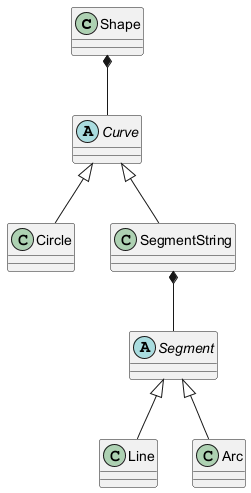
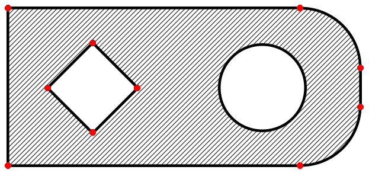
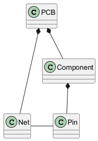
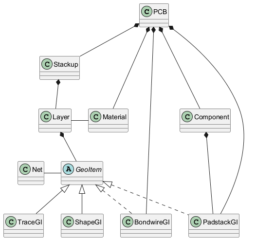
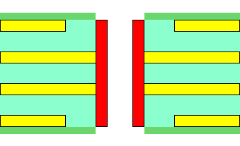
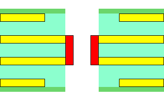
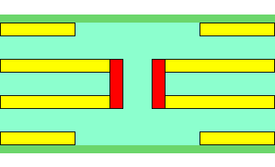
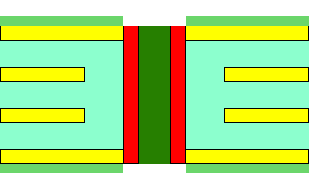
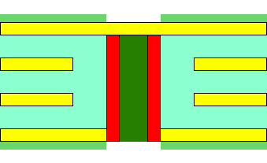

cst.eda package¶
Submodules¶
cst.eda.geometry2d¶
The geometry2d module provides basic classes and operations to create, transform and modify shapes and curves in 2D space.
The classes are used by the cst.eda.pcb_api module to define geometries on PCBs and packages.
Curves and shapes¶

Classes for shapes, curves and segments¶
Shapes are used to define outlines, cutouts, pads and drill holes on PCBs.The definition of shapes is based on curves defining their outlines and cutouts.
Curves on their own are also used to describe 1D geometries in 2D space, like traces.
General curves are defined as SegmentString, which concatenates Segments
(straight Lines or circular Arcs) into closed or open curves with a
SegmentString.start and SegmentString.end point.
A special case of a curve is a Circle, which is always closed and has no start or end point.
Shape outlines and holes¶
{kind=link}

Shape defined by shell and holes¶
Shapes are solid areas. They are described by an exterior Shape.shell curve, and
optionally some interior Shape.holes.
The picture on the right shows a shape defined by
a shell
SegmentStringconsisting of 4 straightLines, and 2Arcsegments.two holes: a
Circle, and aSegmentStringof 4 straightLines.
Curves and shapes defined this way are not necessarily valid geometries:
There are a number of requirements, which valid curves and shapes have to meet, see
Curve.is_valid()andShape.is_valid().The geometry API allows creating invalid geometries. Validity is only checked and enforced when the geometries are used in some operation, or assigned to some PCB.
The validity of geometries can be checked (
Curve.is_valid()andShape.is_valid()) and healed (Curve.heal()andheal_shapes()) in advance, but any API requiring valid geometries will invoke the healing algorithms if necessary.
Transformations¶
Affine Transformations can be used to transform any geometry object, and can be used to
create local working coordinate systems.
Transformations are composed from
It is also possible to create Transformation.inverse() transformations.
This allows using transformations for mapping between different coordinate systems:
Geometries can be created in a local coordinate system with simple axes-aligned coordinates.
A transformation can be used to transform the created geometries into the global coordinate system, and align them with existing geometries.
Reference¶
- class BoundingBox(*args)¶
Axis-aligned bounds of a set of points. A BoundingBox containing no points is considered empty and tests as
False.Computes the bounds of a set of points.
- Parameters:
args – List of geometry objects. (
R2,Segment,Curve,Shape,BoundingBox, …)
- property bounds¶
Bounds as
(xmin, ymin, xmax, ymax), orNonefor an empty BoundingBox.
- extend(*args)¶
Extends the bounds to include a set of points.
- Parameters:
args – List of geometry objects. (
R2,Segment,Curve,Shape,BoundingBox, …)
- extend_by(dist: float)¶
Extends all bounds by given distance
- Parameters:
dist – distance
- intersects(other: BoundingBox)¶
Returns whether present and given second bbox intersect.
- Parameters:
other – second bbox
- class Arc(start: Iterable, end: Iterable, *, midpoint: Iterable | None = None, center: Iterable | None = None, angle_deg: float | None = None, angle_rad: float | None = None, radius: float | None = None, orientation: int | None = None)¶
Arc
SegmentCreate arc segment
Construct arc through 3 points:
start-midpoint-end:Arc(start, end, midpoint=midpoint)Construct arc through 2 points on a circle given by radius and orientation: (resulting arc will be shorter than 180 degree)
Arc(start, end, radius=radius, orientation=1)Construct arc through 2 points on a circle given by center and orientation:
Arc(start, end, center=center, orientation=1)Construct arc through 2 points with a given central angle in degrees or radians:
Arc(start, end, angle_deg=angle_deg)Arc(start, end, angle_rad=angle_rad)
Refer to the member properties for meaning, range and signedness of the individual parameters.
- property angle_deg¶
Central angle of the arc in degree.
Range (-360, 360).
- Sign matches orientation.
angle > 0: counter-clock-wise
angle < 0: clock-wise
- Type:
float
- property angle_rad¶
Central angle of the arc in radians.
Range (-2pi, 2pi).
- Sign matches orientation.
angle > 0: counter-clock-wise
angle < 0: clock-wise
- Type:
float
- approximate_polyline(max_facet_length: float, include_start: bool = True, include_end: bool = True) List[geometry2d.R2]¶
Compute a polyline approximating the segment.
max_facet_length: Maximum length of facets in arc approximations.include_start,include_end: Whether to include start/end point. Skipping these helps to avoid duplicate points when concatenating multiple segments.
- interpolate(distance: float, normalized: bool = False) geometry2d.R2¶
Compute point on segment.
distance >= 0: distance from startdistance < 0: -distance from endnormalized == False: distance is clamped to [-length, length]normalized == True: distance is clamped to [-1, 1]
- property length¶
Length of the segment.
- Type:
float
- property orientation¶
Orientation of the arc.
1 = counter-clock-wise
-1 = clock-wise
- Type:
int
- property radius¶
Radius of the circle associated to the arc.
Always positive.
- Type:
float
- class Circle(center: Iterable, radius: float)¶
Closed circle
CurveCreate closed circle curve
- approximate_polyline(max_facet_length: float, include_start: bool = True, include_end: bool = True) List[geometry2d.R2]¶
Compute a polyline approximating the curve.
max_facet_length: Maximum length of facets in arc approximations.include_start,include_end: Whether to include start/end point. Skipping one of them avoids duplicate points for closed curves.
- copy() geometry2d.Curve¶
Create a copy of the object.
- static create_polyline(points: Iterable, closed: bool = False) geometry2d.SegmentString¶
Create a polyline from a list of points (
R2).closed: Close the polyline.
- static create_rectangle(p1: Iterable, p2: Iterable, /) geometry2d.SegmentString¶
Create a
SegmentStringof length 4, connecting the given points (R2) by horizontal/verticalLines to form a closed rectangle.
- heal(closed: bool = False) None¶
Heals a curve and makes it a valid curve. Raises an exception for empty
SegmentStrings.
- property is_circle¶
Whether this curve is a
Circle(True) or aSegmentString(False).- Type:
bool
- property is_closed¶
Whether the curve is closed. Raises an exception for empty
SegmentStrings.- Type:
bool
- property is_polyline¶
Whether this curve consists of only straight
Lines.Truefor emptySegmentStrings.- Type:
bool
- is_valid(closed: bool = False) bool¶
Check whether the curve is valid.
Curve is not empty.
Curve is continuous. (consecutive curve segments have matching end/start point)
Optionally: Check if curve is closed. (
closed = True)
- property length¶
Length of the curve.
curve.lengthis the geometric length of theCurve.len(segment_string)is the number ofSegments in aSegmentString.
- Type:
float
- make_closed() None¶
Close the curve by adding a straight
Line, if not yet closed. Raises an exception for emptySegmentStrings.
- property radius¶
Radius of circle.
- Type:
float
- transform(t: geometry2d.Transformation) None¶
Transform the curve in-place.
- class Curve¶
Abstract curve
- approximate_polyline(max_facet_length: float, include_start: bool = True, include_end: bool = True) List[geometry2d.R2]¶
Compute a polyline approximating the curve.
max_facet_length: Maximum length of facets in arc approximations.include_start,include_end: Whether to include start/end point. Skipping one of them avoids duplicate points for closed curves.
- static create_polyline(points: Iterable, closed: bool = False) geometry2d.SegmentString¶
Create a polyline from a list of points (
R2).closed: Close the polyline.
- static create_rectangle(p1: Iterable, p2: Iterable, /) geometry2d.SegmentString¶
Create a
SegmentStringof length 4, connecting the given points (R2) by horizontal/verticalLines to form a closed rectangle.
- heal(closed: bool = False) None¶
Heals a curve and makes it a valid curve. Raises an exception for empty
SegmentStrings.
- property is_circle¶
Whether this curve is a
Circle(True) or aSegmentString(False).- Type:
bool
- property is_closed¶
Whether the curve is closed. Raises an exception for empty
SegmentStrings.- Type:
bool
- property is_polyline¶
Whether this curve consists of only straight
Lines.Truefor emptySegmentStrings.- Type:
bool
- is_valid(closed: bool = False) bool¶
Check whether the curve is valid.
Curve is not empty.
Curve is continuous. (consecutive curve segments have matching end/start point)
Optionally: Check if curve is closed. (
closed = True)
- property length¶
Length of the curve.
curve.lengthis the geometric length of theCurve.len(segment_string)is the number ofSegments in aSegmentString.
- Type:
float
- make_closed() None¶
Close the curve by adding a straight
Line, if not yet closed. Raises an exception for emptySegmentStrings.
- transform(t: geometry2d.Transformation) None¶
Transform the curve in-place.
- class Line(start: Iterable, end: Iterable)¶
Line
SegmentCreate line segment.
- approximate_polyline(max_facet_length: float, include_start: bool = True, include_end: bool = True) List[geometry2d.R2]¶
Compute a polyline approximating the segment.
max_facet_length: Maximum length of facets in arc approximations.include_start,include_end: Whether to include start/end point. Skipping these helps to avoid duplicate points when concatenating multiple segments.
- interpolate(distance: float, normalized: bool = False) geometry2d.R2¶
Compute point on segment.
distance >= 0: distance from startdistance < 0: -distance from endnormalized == False: distance is clamped to [-length, length]normalized == True: distance is clamped to [-1, 1]
- property length¶
Length of the segment.
- Type:
float
- class R2(*args, **kwargs)¶
2D vector
R2 represent a cartesian point in 2D space, similar to a
Tuple[float, float].- Operators treat R2 like a vector; this differs from tuples, which are treated like sequences:
R2(1, 2) + R2(3, 4) == R2(3, 6): R2 are added like vectors, not concatenated like sequences.R2(1, 2) @ R2(1, 2) == 5: R2 can be matrix-multiplied with R2 (inner product), or withTransformations.5 * R2(1, 2) == R2(5, 10),R2(2, 4) / 2 == R2(1, 2): R2 can be multiplied/divided by floats (scaling).abs(R2(3, 4)) == 5: The absolute value of a R2 is the Euclidian length.
API methods, which expect points or vectors, usually accept any
Iterable[float]:R2,Tuple[float, float],List[float], …
Overloaded function.
__init__(
self: geometry2d.R2, iterable: Iterable) →NoneCreate point from an iterable of length 2.
__init__(
self: geometry2d.R2, x: float, y: float) →NoneCreate point from two coordinates.
- property x¶
The x coordinate
- Type:
float
- property y¶
The y coordinate
- Type:
float
- class Segment¶
Abstract curve segment
- approximate_polyline(max_facet_length: float, include_start: bool = True, include_end: bool = True) List[geometry2d.R2]¶
Compute a polyline approximating the segment.
max_facet_length: Maximum length of facets in arc approximations.include_start,include_end: Whether to include start/end point. Skipping these helps to avoid duplicate points when concatenating multiple segments.
- interpolate(distance: float, normalized: bool = False) geometry2d.R2¶
Compute point on segment.
distance >= 0: distance from startdistance < 0: -distance from endnormalized == False: distance is clamped to [-length, length]normalized == True: distance is clamped to [-1, 1]
- property length¶
Length of the segment.
- Type:
float
- class SegmentString(segments: Iterable | None = None)¶
Curveconsisting of a sequence ofSegments.Create SegmentString from list of
Segments.- append(segment: geometry2d.Segment) None¶
Append
Segment.
- append_arc(p1: Iterable, p2: Iterable | None = None, /, *, midpoint: Iterable | None = None, center: Iterable | None = None, angle_deg: float | None = None, angle_rad: float | None = None, radius: float | None = None, orientation: int | None = None) None¶
Append an
Arcsegment.If only one point is passed, the arc will start at the current curve end. The SegmentString must not be empty in that case.
Construct arc through 3 points:
start-midpoint-end:Arc(start, end, midpoint=midpoint)Construct arc through 2 points on a circle given by radius and orientation: (resulting arc will be shorter than 180 degree)
Arc(start, end, radius=radius, orientation=1)Construct arc through 2 points on a circle given by center and orientation:
Arc(start, end, center=center, orientation=1)Construct arc through 2 points with a given central angle in degrees or radians:
Arc(start, end, angle_deg=angle_deg)Arc(start, end, angle_rad=angle_rad)
Refer to the member properties for meaning, range and signedness of the individual parameters.
- append_line(p1: Iterable, p2: Iterable | None = None, /) None¶
Append a straight
Linesegment.If only one point is passed, the line will start at the current curve end. The SegmentString must not be empty in that case.
- approximate_polyline(max_facet_length: float, include_start: bool = True, include_end: bool = True) List[geometry2d.R2]¶
Compute a polyline approximating the curve.
max_facet_length: Maximum length of facets in arc approximations.include_start,include_end: Whether to include start/end point. Skipping one of them avoids duplicate points for closed curves.
- clear() None¶
Reset to empty state.
- copy() geometry2d.Curve¶
Create a copy of the object.
- static create_polyline(points: Iterable, closed: bool = False) geometry2d.SegmentString¶
Create a polyline from a list of points (
R2).closed: Close the polyline.
- static create_rectangle(p1: Iterable, p2: Iterable, /) geometry2d.SegmentString¶
Create a
SegmentStringof length 4, connecting the given points (R2) by horizontal/verticalLines to form a closed rectangle.
- extend_polyline(points: Iterable) None¶
Append a sequence of straight
Linesegments.The first line will start at the current curve end. If only one point is passed, the SegmentString must not be empty.
- heal(closed: bool = False) None¶
Heals a curve and makes it a valid curve. Raises an exception for empty
SegmentStrings.
- insert(i: int, segment: geometry2d.Segment) None¶
Insert a
Segmentbefore the segment at positioni.
- interpolate(distance: float, normalized: bool = False) geometry2d.R2¶
Compute point on curve.
distance >= 0: distance from startdistance < 0: -distance from endnormalized == False: distance is clamped to [-length, length]normalized == True: distance is clamped to [-1, 1]
- property is_circle¶
Whether this curve is a
Circle(True) or aSegmentString(False).- Type:
bool
- property is_closed¶
Whether the curve is closed. Raises an exception for empty
SegmentStrings.- Type:
bool
- property is_polyline¶
Whether this curve consists of only straight
Lines.Truefor emptySegmentStrings.- Type:
bool
- is_valid(closed: bool = False) bool¶
Check whether the curve is valid.
Curve is not empty.
Curve is continuous. (consecutive curve segments have matching end/start point)
Optionally: Check if curve is closed. (
closed = True)
- property length¶
Length of the curve.
curve.lengthis the geometric length of theCurve.len(segment_string)is the number ofSegments in aSegmentString.
- Type:
float
- make_closed() None¶
Close the curve by adding a straight
Line, if not yet closed. Raises an exception for emptySegmentStrings.
- pop(i: int = -1) geometry2d.Segment¶
Remove segment at position
i, and return it.
- transform(t: geometry2d.Transformation) None¶
Transform the curve in-place.
- class Shape(shell: geometry2d.Curve = None, holes: Iterable | None = None)¶
Solid shape, defined by an exterior
shelland a list ofholes.Create shape.
Curves passed as shell or holes are added as shallow copy.- copy() geometry2d.Shape¶
Create a deep copy of the shape, its shell and holes.
- static create_circle(center: Iterable, radius: float) geometry2d.Shape¶
Create circle shape.
- static create_polygon(points: Iterable) geometry2d.Shape¶
Create a polygon from a list of points (
R2).
- static create_rectangle(p1: Iterable, p2: Iterable, /) geometry2d.Shape¶
Create a rectangular shape by connecting the given points with horizontal/vertical lines.
- is_valid(tolerance: float) bool¶
Check whether
heal_shapes()would alter the shape.tolerance: Geometrical tolerance, see alsoPCB.tolerance.
- transform(t: geometry2d.Transformation) None¶
Transform the shape in-place.
shellandholesare replaced with transformed copies of their originals.
- class Transformation¶
2D affine transformation
Affine transformations (translation, rotation, scaling, reflection) can be applied to points, curves, shapes and other geometry objects.
t1 = geometry2d.reflection(flip_x=True) # flip x coordinate t2 = geometry2d.rotation(angle_deg=-45) # rotate counter-clock-wise by -45 degree (or clock-wise by 45 degree) t3 = geometry2d.translation(2, 1) # translate origin to point (2, 1) t321 = t3 @ t2 @ t1 # transformations are applied right-to-left p = R2(1, 1) p1 = t1.apply(p) # p transformed by t1 p21 = t2.apply(p1) # p1 transformed by t2 p321 = t3.apply(p21) # p2 transformed by t3 p321 = t321.apply(p) # same result: p transformed in-order by t1, t2, t3
Identity transformation.
- apply(geo)¶
Copy and transform some geometry object (
R2,Segment,Curve,Shape).- Parameters:
arg – Input object.
- Returns:
Transformed copy of the input object.
- inverse() geometry2d.Transformation¶
Compute inverse transformation.
- heal_shapes(shapes: List[geometry2d.Shape], tolerance: float) List[geometry2d.Shape]¶
Tries to heal shapes.
All returned shapes will be valid.
Healing a shape may result in multiple shapes, so the result list may be longer than the input list.
If healing a shape fails, it is dropped, so the result list may be shorter than the input list.
tolerance: Geometrical tolerance, see alsoPCB.tolerance.
- reflection(*, flip_x: bool = False, flip_y: bool = False, neutral_pt: Iterable | None = None) geometry2d.Transformation¶
Create a mirroring transformation.
The
neutral_ptwill remain unchanged.Other points are mirrored at the horizontal or vertical axis through
neutral_pt.
If
neutral_pt = (0, 0):flip_x = True:(x, y)is mapped to(-x, y).flip_y = True:(x, y)is mapped to(x, -y).
- rotation(*, angle_rad: float | None = None, angle_deg: float | None = None, neutral_pt: Iterable | None = None) geometry2d.Transformation¶
Create rotation.
The transformation rotates points around
neutral_pt.The rotation angle can be given either in radians (
angle_rad) or in degrees (angle_deg).Positive angles describe a counter-clockwise rotation.
- scaling(factor: float, *, neutral_pt: Iterable | None = None) geometry2d.Transformation¶
Create scaling transformation.
The
neutral_ptwill remain unchanged.Distances of other points are scaled by
factor.
- translation(*args, **kwargs)¶
Overloaded function.
translation(
offset: Iterable) →geometry2d.TransformationCreate translation, which maps the origin
(0, 0)tooffset.translation(
x: float, y: float) →geometry2d.TransformationCreate translation, which maps the origin
(0, 0)to(x, y).
cst.eda.pcb_api¶
The PCB module offers access to PCB and package designs as used
in CST PCB Studio, and
in EDA Import before generating the 3D model for high frequency, low frequency or thermal simulations.
The PCB class represents the entire logical and physical design of the PCB or package.
Logical data model¶

Logical data model of PCB¶
The logical data model describes the
The behavior of the components is described by part models from the cst.eda.part_library.
The traces and conductors on the PCB implementing the nets are described in the physical PCB data model.
Object |
Create new |
Access |
|---|---|---|
Physical data model¶

Physical data model of PCB¶
The physical data model describes
the
Materials of the conducting and dielectric layers, and- the geometries (
GeoItem) present on the PCB: PadstackGIs as part of components or as vias on the PCB, andBondwireGIs between layers.
- the geometries (
Geometries on dielectric layers may describe outline and cutouts of mask layers.
Geometries on conducting layers describe the physical connectivity and the implementation of the logical Nets.
Object |
Create new |
Access existing |
|---|---|---|
Board outline |
||
Settings for 3D simulation¶
When creating a 3D model from a PCB or package, PCB.simulation_settings
control the 3D model generation, and add excitations and monitors.
- Excitations / monitors:
- High frequency simulations:
- Thermal simulations:
- Model complexity / simplifications:
- Restrict import area:
- Restrict imported layers:
Reference¶
- class Thermal_Model_Simplification_Algorithm¶
Deprecated since version 2025.0: Use
ThermalModelLayerSimplificationinstead.
- import_pcb(pcb, cst_project, ldb_name='pcb.ldb', show_dialog=False, part_library=None)¶
Import the PCB into the given 3D project.
- Parameters:
pcb – The PCB
cst_project – The CST 3D Project
ldb_name – Short name of the .ldb file to be stored in the cst project
show_dialog – if True, open EDA Import Dialog in interactive mode
part_library – If specified as PartLibrary object, part models will be added from here.
- Returns:
None
- update_pcb(pcb, cst_project, ldb_name='pcb.ldb', show_dialog=False, part_library=None)¶
Update existing PCB import (including PCB simulation settings) in given 3D project.
- Parameters:
pcb – The PCB
cst_project – The CST 3D Project
ldb_name – Short name of the .ldb file, already present in the cst project
show_dialog – if True, open EDA Import Dialog in interactive mode
part_library – If specified as PartLibrary object, part models will be added from here
- Returns:
None
- class Bend¶
Bending instruction
- property angle_deg¶
Bending angle in degrees.
- Type:
float | cst.units.Quantity
- property angle_rad¶
Bending angle in radians.
- Type:
float | cst.units.Quantity
- property bendline_end¶
End point of the line defining the bending location.
- Type:
- property bendline_start¶
Start point of the line defining the bending location.
- Type:
- delete() None¶
Deletes the Bend.
- property enabled¶
Enable (
True) or disable (False) the bend.- Type:
bool
- get_bendline_end(unit: None | units.Unit | units.Quantity = None) geometry2d.R2¶
Get
bendline_endin the given unit.unit == NoneassumesPCB.length_unit, just like the property.
- get_bendline_start(unit: None | units.Unit | units.Quantity = None) geometry2d.R2¶
Get
bendline_startin the given unit.unit == NoneassumesPCB.length_unit, just like the property.
- property inside¶
Inner side of the bend / direction of bending
BendSide.TOP: The top side of the PCB is on the inside of the bend, the PCB is bent upwards.BendSide.BOTTOM: The bottom side of the PCB is on the inside of the bend, the PCB is bent downwards.
- Type:
- is_deleted() bool¶
Returns whether the Bend was deleted
- property name¶
Bending instruction name
- Type:
str
- property radius¶
Bending radius in
PCB.length_unitsThe radius is measured at a reference elevation in the PCB. See
SimulationSettings.bending_z_factor_radius.- Type:
float | cst.units.Quantity
- set_bendline_end(p: Iterable, unit: None | units.Unit | units.Quantity = None) None¶
Set
bendline_endin the given unit.unit == NoneassumesPCB.length_unit, just like the property.
- set_bendline_start(p: Iterable, unit: None | units.Unit | units.Quantity = None) None¶
Set
bendline_startin the given unit.unit == NoneassumesPCB.length_unit, just like the property.
- set_name(name: str, *, rename_unique: bool = True) None¶
Assign
name, and optionally rename for uniqueness.If
nameis already in use: Ifrename_unique == True, append a number tonameuntil it is unique, else raise an exception.Assigning the property
namedirectly is also possible, and assumesrename_unique == False.
- class BendSide(value: int)¶
See
Bend.insideMembers:
TOP
BOTTOM
- property name¶
- class BendingCrossSection(value: int)¶
See
SimulationSettings.bending_cross_sectionMembers:
STACKUP_REGION
WHOLE_BOARD
CUSTOM
- property name¶
- class BendingZReference(value: int)¶
See
SimulationSettings.bending_z_referenceMembers:
INNER_SURFACE
BOARD_CENTER
- property name¶
- class BondwireGI¶
Bondwire geometry on PCB
- delete() None¶
Deletes the geometry and all references to it.
- get_end(unit: None | units.Unit | units.Quantity = None) geometry2d.R2¶
Get
endin the given unit.unit == NoneassumesPCB.length_unit, just like the property.
- get_start(unit: None | units.Unit | units.Quantity = None) geometry2d.R2¶
Get
startin the given unit.unit == NoneassumesPCB.length_unit, just like the property.
- property is_bondwire¶
Whether this GeoItem is a
BondwireGI- Type:
bool
- is_deleted() bool¶
Returns whether the geometry was deleted
- property is_padstack¶
Whether this GeoItem is a
PadstackGI- Type:
bool
- set_end(p: Iterable, unit: None | units.Unit | units.Quantity = None) None¶
Set
endin the given unit.unit == NoneassumesPCB.length_unit, just like the property.
- set_start(p: Iterable, unit: None | units.Unit | units.Quantity = None) None¶
Set
startin the given unit.unit == NoneassumesPCB.length_unit, just like the property.
- property start¶
Connection point on
start_layer.- Type:
- class BondwireSimulationModel(value: int)¶
See
SimulationSettings.bondwire_simulation_modelMembers:
SOLID
WIRE
- property name¶
- class Component¶
Access to PCB placed components
- create_padstack(net: pcb_api.Net, src: pcb_api.PadstackGI = None, position: Iterable | None = None, *, unit: None | units.Unit | units.Quantity = None) pcb_api.PadstackGI¶
Add a new
PadstackGIto the component.If
srcis given, copy properties, pad shapes and transformation from this padstack.If
positionis given, translate the new padstack to this position; otherwise copy position fromsrcor use(0, 0).unitis the length-unit ofposition. Ifunit == None, thenPCB.length_unitis assumed.
- create_pin(name: str, position: Iterable, net: pcb_api.Net = None, *, layer: pcb_api.Layer = None, index: int | None = None, rename_unique: bool = True, unit: None | units.Unit | units.Quantity = None) pcb_api.Pin¶
Add a new
Pinto the component.If
0 <= index <= len(pins)is given, the pin is inserted inpinsat the given position. ThePin.indexof subsequent pins is incremented. This may affect part models, which reference pins via index.If
index is None, the pin is appended at the end ofpinsand assigned the lastPin.index.If
nameis already in use: Ifrename_unique == True, append a number tonameuntil it is unique, else raise an exception.
unitis the length-unit ofposition. Ifunit == None, thenPCB.length_unitis assumed.
- delete() None¶
Deletes the component and all references to it.
- property die_stack¶
The
DieStackof the component.Noneif no die-stack is associated.- Type:
Optional[DieStack]
- get_outlines(*, transformed: bool = True, unit: None | units.Unit | units.Quantity = None) List[geometry2d.Shape]¶
Return a copy of the
geometry2d.Shapes defining the component outline.transformed == True: The shapes use global PCB coordinates. (get_transformation()has been applied)transformed == False: The shapes use local component coordinates. (get_transformation()has not been applied)
unitis the length-unit for the result. Ifunit == None, thenPCB.length_unitis applied.
- get_position(unit: None | units.Unit | units.Quantity = None) geometry2d.R2¶
Get
positionin the given unit.unit == NoneassumesPCB.length_unit, just like the property.
- get_transformation(*, unit: None | units.Unit | units.Quantity = None) geometry2d.Transformation¶
Returns the transformation as defined by
mount_side,rotation_deg/rotation_rad,position.mount_side == BOTTOMmatches aflip_xtransformation.unitis the length-unit of translational part. Ifunit == None, thenPCB.length_unitis applied.
- property height¶
Height of the component in
PCB.length_units.- Type:
float | cst.units.Quantity
- is_deleted() bool¶
Returns whether the component was deleted
- property is_mounted¶
Places/unplaces component.
- Type:
bool
- property mount_layer¶
Layer the component is mounted on.
See
set_mount_layer()for modifying this property.- Type:
- property mount_side¶
The
MountSideof the component on itsmount_layer.Modified via
transform().- Type:
- property name¶
The name (reference designator) of the component.
- Type:
str
- property outline¶
Deprecated since version 2024.2: Use
get_outlinesinstead.The list of (x, y)-pairs describing the outline polygon.
This readonly property returns a shallow snapshot. Modifying the list does not alter the property.
- property padstacks¶
PadstackGIs of this component.- Type:
List[PadstackGI]
- property partname¶
The partname associated with the component (if any).
- Type:
str
- pin(name: str) pcb_api.Pin¶
Returns the component
Pinwith the given name. Raises an exception, if the pin does not exist.
- property pins¶
The list of all component
Pins.This readonly property returns a shallow snapshot. Modifying the list does not alter the property.
- Type:
List[Pin]
- property position¶
The position (
geometry2d.R2) of the component in the global PCB coordinate system.Modified via
transform().- Type:
- property rotation_deg¶
Rotation of the component on the PCB in degree.
Modified via
transform().- Type:
float | cst.units.Quantity
- property rotation_rad¶
Rotation of the component on the PCB in radians.
Modified via
transform().- Type:
float | cst.units.Quantity
- set_mount_layer(layer: pcb_api.Layer, *, update_pads: bool = True) None¶
Assigns
mount_layer.Noneis resolved to the current top / bottom layer of the PCB stackup.If
update_pads == True, the method will make a best effort to adjust the pads in all padstacks according tomount_type:update_pads == True and mount_type == SURFACE: If there is a regular pad on a single layer only, move this pad to the new mounting-layer, and adjust the layer-span.update_pads == False or mount_type != SURFACE: do nothing
- set_name(name: str, *, rename_unique: bool = True) None¶
Assign
name, and optionally rename for uniqueness.If
nameis already in use: Ifrename_unique == True, append a number tonameuntil it is unique, else raise an exception.Assigning the property
namedirectly is also possible, and assumesrename_unique == False.
- set_outlines(outlines: List[geometry2d.Shape], *, transformed: bool = False, unit: None | units.Unit | units.Quantity = None) None¶
Assign the component outline, by copying the
geometry2d.Shapes fromoutlines.transformed == True: The shapes use global PCB coordinates. (get_transformation()has been applied)transformed == False: The shapes use local component coordinates. (get_transformation()has not been applied)
Note: the different default value for
transformedcompared toget_outlines().unitis the length-unit ofoutlines. Ifunit == None, thenPCB.length_unitis assumed.
- transform(t: geometry2d.Transformation, *, reset_mount_layer: bool = False, update_pads: bool = True, unit: None | units.Unit | units.Quantity = None) None¶
Applies a transformation to the component, in addition to the existing one.
Transforms
mount_side(matchesflip_x),rotation_deg,rotation_rad,position.Transforms component outline.
Transforms pins.
Transforms padstacks.
Optionally
mount_layerand pads can be updated as well:reset_mount_layer == True: same asset_mount_layer(None, update_pads). Put component on top / bottom layer of PCB.reset_mount_layer == False: do not modifymount_layer, do not modify pads. (update_padshas no meaning here).
unitis the length-unit of the translational part oft. Ifunit == None, thenPCB.length_unitis assumed.
- class ConformalSoldermaskNetTypes(value: int)¶
See
SimulationSettings.conformal_soldermask_net_typesMembers:
NONE
SIGNAL
ALL
- property name¶
- class CurrentPort¶
Current port for low-frequency or static simulations
- delete() None¶
Removes the excitation. Afterwards, the object should not be used any longer.
- property invert_direction¶
Orientation of the CurrentPort.
False: The current is oriented from the PCB into the component.True: The current is oriented from the component into the PCB.
- Type:
bool
- is_deleted() bool¶
Returns whether the excitation was deleted
- property location¶
Location of the excitation as tuple (
Pin.refdes,Pin.name).- Type:
Tuple[str, str]
- property name¶
Name of the CurrentPort.
- Type:
str
- property phase¶
The phase of the CurrentPort in degrees.
- Type:
float | cst.units.Quantity
- property value¶
The value of the CurrentPort in Ampere.
- Type:
float | cst.units.Quantity
- class DieStack¶
Interface to the stackup of a die-stack
- property components¶
List of
Components, which use this stackup.This readonly property returns a shallow snapshot. Modifying the list does not alter the property.
- Type:
List[Component]
- create_layer(layer_type: pcb_api.LayerType, name: str, material: pcb_api.Material, thickness: float | units.Quantity, *, above: pcb_api.Layer = None, below: pcb_api.Layer = None, rename_unique: bool = True) pcb_api.Layer¶
Create and add a new
Layerto the die-stack.layer_typemust be a valid option for die-stacks:BUMPS,DIE,DIE_PADS,INTERPOSER, ``SPACER.If
nameis already in use: Ifrename_unique == True, append a number tonameuntil it is unique, else raise an exception.
- layer(name: str) pcb_api.Layer¶
Access
Layerby name. Raises an exception, if the layer does not exist in this die-stack.
- property layers¶
List of
Layers in this die-stack.This readonly property returns a shallow snapshot. Modifying the list does not alter the property.
- Type:
List[Layer]
- reorder_layers(new_order: List[pcb_api.Layer]) None¶
Reorder existing layers.
new_ordermust be a permutation of existing layers. All layers fromlayersmust appear exactly once.
- class DiscretePort¶
Discrete port for high-frequency simulations
- delete() None¶
Removes the excitation. Afterwards, the object should not be used any longer.
- property impedance¶
The intrinsic impedance of the Port in Ohm.
- Type:
float | cst.units.Quantity
- property invert_direction¶
Orientation of the Port.
False: Port is oriented from pinlocationto the reference.True: Port is oriented from the reference to pinlocation.
- Type:
bool
- is_deleted() bool¶
Returns whether the excitation was deleted
- property label¶
Label for the Port.
- Type:
str
- property location¶
Location of the excitation as tuple (
Pin.refdes,Pin.name).- Type:
Tuple[str, str]
- property number¶
The Port number.
- Type:
int
- property reference_nets¶
The
Net.names used as a reference for this port. All pins belonging to the reference nets will be shorted to the PEC Sheet.This property copies the list on both reading and assignment. The property is only modified when assigned.
- Type:
List[str | Net]
- property reference_pins¶
The
Pin.names used as a reference for this port. All reference pins will be shorted to the PEC Sheet.This property copies the list on both reading and assignment. The property is only modified when assigned.
- Type:
List[str | Pin]
- property use_pec_sheet¶
Whether to generate a component PEC-sheet as reference.
- Type:
bool
- class DrillFilling(value: int)¶
-
Members:
NONE
PLATING_MATERIAL
SUBSTRATE_MATERIAL
CUSTOM_MATERIAL
- property name¶
- class DrillGeometryType(value: int)¶
See
SimulationSettings.drill_geometry_typeMembers:
BEFORE_PLATING
AFTER_PLATING
- property name¶
- class DrillSimulationModel(value: int)¶
See
SimulationSettings.drill_simulation_modelandNetSimulationSettings.drill_simulation_modelMembers:
SIMPLE
EFFECTIVE
DETAILED
- property name¶
- class EtchFactorNetTypes(value: int)¶
See
SimulationSettings.etch_factor_net_typesMembers:
NONE
SIGNAL
ALL
- property name¶
- class EtchType(value: int)¶
See
Layer.etch_typeMembers:
NONE
FROM_TOP
FROM_BOTTOM
- property name¶
- class GeoItem¶
Base class for PCB geometries
- delete() None¶
Deletes the geometry and all references to it.
- property is_bondwire¶
Whether this GeoItem is a
BondwireGI- Type:
bool
- is_deleted() bool¶
Returns whether the geometry was deleted
- property is_padstack¶
Whether this GeoItem is a
PadstackGI- Type:
bool
- class HeatSource(*args, **kwargs)¶
3D thermal excitations from components
Overloaded function.
__init__(
self: pcb_api.HeatSource) →None__init__(
self: pcb_api.HeatSource, component: str, power: float, height: float) →None- delete() None¶
Removes the excitation. Afterwards, the object should not be used any longer.
- property height¶
Height of the HeatSource in
PCB.length_units.- Type:
float | cst.units.Quantity
- is_deleted() bool¶
Returns whether the excitation was deleted
- property location¶
Location of the HeatSource given as
Component.name.- Type:
str
- property power¶
Power emitted by the HeatSource in Watt.
- Type:
float | cst.units.Quantity
- class Layer¶
Access to PCB layers
- property color¶
Layer color as tuple (r,g,b) of values within range 0 to 255
- Type:
Tuple[int, int, int]
- copy_geo_items_from(layer: pcb_api.Layer) None¶
Copy all geometry items (traces, shapes, pads) from the other
layerto the present layer. Resulting items will all be of typeShapeGI.
- create_shape(shape: geometry2d.Shape, net: pcb_api.Net, *, unit: None | units.Unit | units.Quantity = None) pcb_api.ShapeGI¶
Create a new shape geometry.
unitis the length-unit ofshape. Ifunit == None, thenPCB.length_unitis assumed.
- create_trace(curve: geometry2d.Curve, width: float | units.Quantity, net: pcb_api.Net, *, unit: None | units.Unit | units.Quantity = None) pcb_api.TraceGI¶
Create a new trace geometry.
unitis the length-unit ofcurve. It also applies towidth, ifwidthis a unit-less float. Ifunit == None, thenPCB.length_unitis assumed.
- delete(remove_components: bool = True, remove_wirebonds: bool = True, disconnect_vias: bool = True) None¶
Remove the layer from the PCB.
After the removal
selfrefers to a<deleted layer>, and is no longer usable.Components andBondwireGIs attached to the layer are removed as well.If
remove_components,remove_wirebondsordisconnect_viasis set toFalse, then an exception is raised, if removal of the layer would result in these actions.
- property die_stack¶
The
DieStackthis layer belongs to.Noneif the layer is not part of a die-stack.- Type:
Optional[DieStack]
- property elevation¶
Elevation (bottom side of layer)
- Type:
float | cst.units.Quantity
- property etch_factor¶
Etch factor for etch layers. Must be > 0.
- Type:
float | cst.units.Quantity
- extrude(layer1: pcb_api.Layer, relative1: float | units.Quantity = 0.0, offset1: float | units.Quantity = 0.0, layer2: pcb_api.Layer = None, relative2: float | units.Quantity = 0.0, offset2: float | units.Quantity = 0.0) None¶
Set extrusion of user layers. Start and stop elevation of the extrusion are defined relative to PCB layers
layer1/2. The elevation relative to the layers is specified byrelative * thickness + offset.relative1/2specifies the elevation within the reference layer: 0=bottom, 0.5=center, 1=topoffset1/2specifies an absolute offset to that position.
Examples:
Extrude
layerfrom the bottom oflayer_TOPto the top oflayer_BOTTOM.>>> layer.extrude(layer1=layer_TOP, layer2=LAYER_BOTTOM, relative2=1.0)
Extrude
layerfrom the top oflayer_TOPupwards by 1.2PCB.length_units.>>> layer.extrude(layer1=layer_TOP, relative1=1.0, relative2=1.0, offset2=1.2)
Extrude
layerfrom the bottom oflayer_TOPdownwards by 0.7PCB.length_units.>>> layer.extrude(layer1=layer_TOP, offset2=-0.7)
- property fill_factor_from_below¶
Filling factor (from below) for etch layers. Must be in range [0, 1].
0: fill from above.0.5: fill equally from above and below.1: fill from below.
- Type:
float | cst.units.Quantity
- geo_items(*, all: bool = False, traces: bool | None = None, shapes: bool | None = None, bondwires: bool | None = None, net: pcb_api.Net = None) List[pcb_api.GeoItem]¶
Find geometries connected to this layer matching a filter criteria.
traces: Return traces asTraceGI.shapes: Return shapes asShapeGI.bondwires: Return bondwires asBondwireGI.all: Default value for type filter. Useall = Trueto return all objects, useall = True, traces = Falseto return all objects but traces.net: Return only geometries from thisNet.Nonemeans all nets/no filter.
- intersect_shapes(shapes: List[geometry2d.Shape], *, only: Iterable | None = None, skip: Iterable | None = None, unit: None | units.Unit | units.Quantity = None) None¶
Modifies traces and shapes on the layer with a boolean intersection operation.
- Shapes:
List of
geometry2d.Shapes.- Only:
Operate only on this list of
TraceGIandShapeGI. IfNone, operate on all traces and shapes.- Skip:
Traces and shapes with any polarity on the layer are intersected with the given
shapes. Only the intersecting parts are kept.The operation will result in the deletion of
TraceGIandShapeGI, and creation of newShapeGI. No bondwires or padstacks will be modified.unitis the length-unit ofshapes. Ifunit == None, thenPCB.length_unitis assumed.
- is_deleted() bool¶
Returns whether the layer was deleted
- property is_positive¶
Polarity of the layer.
True: Layer geometries describe presence of material.False: Layer is filled with material; geometries describe absence of material.
- Type:
bool
- property name¶
Layer name.
- Type:
str
- static new_from_difference(name: str, positive: List[pcb_api.Layer], negative: List[pcb_api.Layer], *, rename_unique: bool = True) pcb_api.Layer¶
Create a new
COMPUTEDlayer by subtracting the etch results of multiple layers.\(\mathtt{result} = (\cup \; \mathtt{positive}) \setminus (\cup \; \mathtt{negative})\)
If
nameis already in use: Ifrename_unique == True, append a number tonameuntil it is unique, else raise an exception.
- static new_from_intersection(name: str, layers: List[pcb_api.Layer], *, rename_unique: bool = True) pcb_api.Layer¶
Create a new
COMPUTEDlayer by intersecting the etch results of multiple layers.\(\mathtt{result} = \cap \; \mathtt{layers}\)
If
nameis already in use: Ifrename_unique == True, append a number tonameuntil it is unique, else raise an exception.
- static new_from_union(name: str, layers: List[pcb_api.Layer], *, rename_unique: bool = True) pcb_api.Layer¶
Create a new
COMPUTEDlayer by uniting the etch results of multiple layers.\(\mathtt{result} = \cup \; \mathtt{layers}\)
If
nameis already in use: Ifrename_unique == True, append a number tonameuntil it is unique, else raise an exception.
- property number¶
Layer number
- Type:
int
- property regions¶
List of
StackupRegions, where this layer is present. Only valid for PCB-layers, raises an exception forDieStackand user layers.- Type:
List[StackupRegion]
- set_name(name: str, *, rename_unique: bool = True) None¶
Assign
name, and optionally rename for uniqueness.If
nameis already in use: Ifrename_unique == True, append a number tonameuntil it is unique, else raise an exception.Assigning the property
namedirectly is also possible, and assumesrename_unique == False.
- simulation_geometry(mode: pcb_api.SimulationGeometryMode, layer: pcb_api.Layer = None) None¶
Set how the 3D simulation geometry is constructed for this layer.
selfmust be aDIELECTRICorMASKlayer.modespecifies how 3D bodies are created forself.If
mode == SimulationGeometryMode.ETCHandlayer is not None, then the 3D bodies are generated from the etch result of a different layer. This may be used to replace the 2D geometry of a mask or dielectric layer with the geometry from a computed layer.
- subtract_shapes(shapes: List[geometry2d.Shape], *, only: Iterable | None = None, skip: Iterable | None = None, unit: None | units.Unit | units.Quantity = None) None¶
Modifies traces and shapes on the layer with a boolean subtract operation.
- Shapes:
List of
geometry2d.Shapes.- Only:
Operate only on this list of
TraceGIand :py:class:`ShapeGI. IfNone, operate on all traces and shapes.- Skip:
The given
shapesare subtracted from traces and shapes with any polarity on the layer. Only the parts outside of anyshapesare kept.The operation will result in the deletion of
TraceGIandShapeGI, and creation of newShapeGI. No bondwires or padstacks will be modified.unitis the length-unit ofshapes. Ifunit == None, thenPCB.length_unitis assumed.
- property surface_rms_bottom¶
Surface roughness (rms) on bottom surface
- Type:
float | cst.units.Quantity
- property surface_rms_top¶
Surface roughness (rms) on top surface
- Type:
float | cst.units.Quantity
- property thickness¶
Layer thickness
- Type:
float | cst.units.Quantity
- class LayerType(value: int)¶
The main
StackupandDieStacks can contain different types ofLayers.User layers are not part of any stackup.
- Some layer types can hold geometries (
GeoItem). Layers without geometries always fill the entire board or die-stack outline.
- Layers with geometries have a polarity (
Layer.is_positive). Positive layers have material only in places, where geometries are defined.
Negative layers fill the entire board or die-stack outline except in places, where geometries are defined.
Geometries may also have individual polarities (
ShapeGI.is_positive,TraceGI.is_positive).
- Layers with geometries have a polarity (
- Some layer types can hold geometries (
- Some layer types and their geometries are considered conductors (
Layer.is_conductor). Geometries on conductor layers define the physical connectivity of component pins on the PCB.
Layer materials are independent of layer types. A
MASKlayer may consist of a conducting material, but it will not be considered in the physical connectivity.
- Some layer types and their geometries are considered conductors (
type
stackup class
has geometries
is conductor
SIGNAL
Stackup
yes
yes
PLANE
Stackup
yes
yes
DIELECTRIC
Stackup
no
no
SOLDERMASK
Stackup
yes
no
MASK
Stackup
yes
no
BGA
Stackup
yes
yes
BUMPS
DieStack
yes
yes
DIE_PADS
DieStack
yes
yes
INTERPOSER
DieStack
yes
yes
DIE
DieStack
no
no
SPACER
DieStack
no
no
COMPUTED
(user layer)
implicit only
no
USER
(user layer)
yes
no
Members:
SIGNAL
PLANE
DIELECTRIC
SOLDERMASK
MASK
DIE
SPACER
INTERPOSER
DIE_PADS
BUMPS
BGA
USER
COMPUTED
- property name¶
- class LengthUnit(value: int)¶
Length units
Members:
meter
centimeter
millimeter
micrometer
nanometer
inch
mil
- property name¶
- static to_unit() units.Unit¶
Convert members to
units.Unit
- property unit¶
Convert to
units.Unit- Type:
- class Material¶
Material definition
- property library_names¶
List of all library material names, usable in : py:meth:.assign_from_library and
PCB.load_material_from_library().Valid names include
Copper (annealed),FR-4 (lossy),Gold, …- Type:
List[str]
- assign_from_library(library_name: str) None¶
Assigns all material properties from library, and set
library_name. All properties will be readonly afterwards.See
library_namesfor a list of all known library material names.
- delete() None¶
Deletes the material and all references to it.
- property epsilon¶
Relative permittivity
- Type:
float | cst.units.Quantity
- is_deleted() bool¶
Returns whether the material was deleted
- property library_name¶
Reference to material library
- Type:
str
- property mu¶
Relative permeability
- Type:
float | cst.units.Quantity
- property name¶
Material name
- Type:
str
- property poissons_ratio¶
Poisson’s ratio
- Type:
float | cst.units.Quantity
- property rho¶
Density [kg/m³]
- Type:
float | cst.units.Quantity
- set_name(name: str, *, rename_unique: bool = True) None¶
Assign
name, and optionally rename for uniqueness.If
nameis already in use: Ifrename_unique == True, append a number tonameuntil it is unique, else raise an exception.Assigning the property
namedirectly is also possible, and assumesrename_unique == False.
- property sigma¶
Electric conductivity [S/m]
- Type:
float | cst.units.Quantity
- property specific_heat¶
Specific heat [J/K/kg]
- Type:
float | cst.units.Quantity
- property tan_delta¶
Tangent delta
- Type:
float | cst.units.Quantity
- property tan_delta_frequency¶
Reference frequency for
tan_delta. [Hz]- Type:
float | cst.units.Quantity
- property thermal_conductivity¶
Thermal conductivity [W/K/m].
Anisotropic values are represented as tuple
(transversal, normal).- Type:
float | cst.units.Quantity | Tuple[float | cst.units.Quantity, float | cst.units.Quantity]
- property thermal_expansion_rate¶
Thermal expansion coefficient [1/K]
- Type:
float | cst.units.Quantity
- unlink_from_library() None¶
Resets
library_nametoNone. All properties will keep their values, but become writable again.
- property youngs_modulus¶
Young’s modulus [Pa]
- Type:
float | cst.units.Quantity
- class Net¶
Access to logical nets and their connectivity
- create_bondwire(start: Iterable, start_layer: pcb_api.Layer, end: Iterable, end_layer: pcb_api.Layer, *, unit: None | units.Unit | units.Quantity = None) pcb_api.BondwireGI¶
Create a new bondwire geometry.
unitis the length-unit ofstartandend. Ifunit == None, thenPCB.length_unitis assumed.
- create_padstack(component: pcb_api.Component = None, src: pcb_api.PadstackGI = None, position: Iterable | None = None, *, unit: None | units.Unit | units.Quantity = None) pcb_api.PadstackGI¶
Create a new
PadstackGI.If
srcis given, copy properties, pad shapes and transformation from this padstack.If
positionis given, translate the new padstack to this position; otherwise copy position fromsrcor use(0, 0).unitis the length-unit ofposition. Ifunit == None, thenPCB.length_unitis assumed.
- create_shape(shape: geometry2d.Shape, layer: pcb_api.Layer, *, unit: None | units.Unit | units.Quantity = None) pcb_api.ShapeGI¶
Create a new shape geometry.
unitis the length-unit ofshape. Ifunit == None, thenPCB.length_unitis assumed.
- create_trace(curve: geometry2d.Curve, width: float | units.Quantity, layer: pcb_api.Layer, *, unit: None | units.Unit | units.Quantity = None) pcb_api.TraceGI¶
Create a new trace geometry.
unitis the length-unit ofcurve. It also applies towidth, ifwidthis a unit-less float. Ifunit == None, thenPCB.length_unitis assumed.
- delete(remove_geometries: bool = True, unlink_pins: bool = True) None¶
Deletes the net and all references to it.
After the removal
selfrefers to a<deleted net>, and is no longer usable.All
TraceGIs,ShapeGIs andBondwireGIs of the net are removed.Component
Pins are kept, but reassigned to netNONE.If
remove_geometriesorunlink_pinsis set toFalse, then an exception is raised, if removal of the net would result in these actions.
- geo_items(*, all: bool = False, traces: bool | None = None, shapes: bool | None = None, padstacks: bool | None = None, bondwires: bool | None = None, layer: pcb_api.Layer = None) List[pcb_api.GeoItem]¶
Find geometries of this net matching a filter criteria.
traces: Return traces asTraceGI.shapes: Return shapes asShapeGI.padstacks: Return padstacks asPadstackGI.bondwires: Return bondwires asBondwireGI.all: Default value for type filter. Useall = Trueto return all objects, useall = True, traces = Falseto return all objects but traces.layer: Return only geometries connected to thisLayer.Nonemeans any layer/no filter. Padstacks are not filtered.
- is_deleted() bool¶
Returns whether the net was deleted
- property is_selected¶
The selection state of the present net, see also
SimulationSettings.selected_nets.SimulationSettings.restrict_to_selected_netsmust be enabled for this to take effect.- Type:
bool
- property name¶
The name of the net
- Type:
str
- property pins¶
The list of all
Pins belonging to the present net.This readonly property returns a shallow snapshot. Modifying the list does not alter the property.
- Type:
List[Pin]
- set_name(name: str, *, rename_unique: bool = True) None¶
Assign
name, and optionally rename for uniqueness.If
nameis already in use: Ifrename_unique == True, append a number tonameuntil it is unique, else raise an exception.Assigning the property
namedirectly is also possible, and assumesrename_unique == False.
- class NetBasedAreaSelection¶
Data structure for specifying automatic area restriction based on nets
- property distance¶
Specifies the inclusion distance in
PCB.length_units around the givennetsby which the area selection is enlarged.update()must be called for changes to take effect.- Type:
float | cst.units.Quantity
- get_outline(*, unit: None | units.Unit | units.Quantity = None) geometry2d.Shape¶
Deprecated. Please use
.get_outlines().
- get_outlines(*, unit: None | units.Unit | units.Quantity = None) list¶
Return list of the selection shapes,
geometry2d.Shape.unitis the length-unit for the result. Ifunit == None, thenPCB.length_unitis applied.
- property grid_size¶
Grid size for
snap_to_grid.update()must be called for changes to take effect.- Type:
float | cst.units.Quantity
- property layers¶
The
Layer.names which should be considered for the net based area selection. Assignments to the list accept bothstrandLayer.This property copies the list on both reading and assignment. The property is only modified when assigned.
update()must be called for changes to take effect.- Type:
List[str | Layer]
- property nets¶
The
Net.names which should be considered for the net based area selection. Assignments to the list accept bothstrandNet.This property copies the list on both reading and assignment. The property is only modified when assigned.
update()must be called for changes to take effect.- Type:
List[str | Net]
- property snap_to_grid¶
Whether to align the vertices of the selection area to a grid. See also
grid_size.update()must be called for changes to take effect.- Type:
bool
- property take_bbox¶
Whether to construct a simple rectangular area (
True), or a complex polygonal area (False) that follows the included traces and pads.update()must be called for changes to take effect.- Type:
bool
- update(*, enable_area_restrictions: bool = True) None¶
Recompute net-based area selection for current parameters.
At least
netsmust be assigned, before a net-based area selection can be created.SimulationSettings.restrict_to_selected_areamust be enabled for this to take effect.enable_area_restrictionsensures this.
- class NetSimulationSettings¶
Net-specific 3D simulation settings
- property drill_simulation_model¶
Select 3D simulation model for drills of this net.
If this property is set to
None, thenSimulationSettings.drill_simulation_modelapplies.- Type:
Optional[DrillSimulationModel]
- property enable_conformal_soldermasks¶
Enable conformal soldermasks on conductors of this net.
SimulationSettings.enable_conformal_soldermasksmust beTruefor this property to take effect.If this property is set to
None, thenSimulationSettings.conformal_soldermask_net_typesapplies.
- Type:
Optional[bool]
- property enable_etch_factors¶
Enable etch factors for conductors of this net.
SimulationSettings.enable_etch_factorsmust beTruefor this property to take effect.If this property is set to
None, thenSimulationSettings.etch_factor_net_typesapplies.
- Type:
Optional[bool]
- property enable_surface_roughness¶
Enable surface roughness for conductors of this net.
SimulationSettings.enable_surface_roughnessmust beTruefor this property to take effect.If this property is set to
None, thenSimulationSettings.surface_roughness_net_typesapplies.
- Type:
Optional[bool]
- class NetType(value: int)¶
Net types, see
Net.net_typeMembers:
Power
Ground
Signal
unknown
- property name¶
- class PCB(*args, **kwargs)¶
Main access point to PCB layout
Overloaded function.
__init__(
self: pcb_api.PCB, filename: os.PathLike) →NoneConstructs a PCB object from the given ldb-filename.
__init__(
self: pcb_api.PCB) →NoneConstructs an empty PCB.
- bend(name: str) pcb_api.Bend¶
Access
Bendinstruction by name. Raises an exception, if the bend does not exist.
- property bends¶
List of all
Bendinstructions.This readonly property returns a shallow snapshot. Modifying the list does not alter the property.
- Type:
List[Bend]
- clear() None¶
Deletes contents of PCB object entirely, keeping object identity.
- component(refdes: str) pcb_api.Component¶
Returns the
Componentwith the given refdes. Raises an exception, if the component does not exist.
- property components¶
The list of all
Components on the PCB.This readonly property returns a shallow snapshot. Modifying the list does not alter the property.
- Type:
List[Component]
- static convert_from(cad_file: os.PathLike, cad_type: str = '', ldb_file: os.PathLike = '', log_file: os.PathLike = '') pcb_api.PCB¶
Converts the given cad_file to a CST Layout Database. Options
- Parameters:
cad_type – Specify the CAD-type explicitly for the given cad file. Normally the cad type is auto-deduced. Allowed values:
"odbpp"for ODB++ (.tgz, .zip)"cdsbrdmcm"for Cadence Allegro/MCM/SiP (.brd, .mcm, .sip)"mgchyp"for Mentor Graphics HyperLynx (.hyp)"zcr5000"for Zuken CR-5000/CR-8000 (.pcf, .sdf)"ldb"for CST Layout Database (.ldb)"simlab"for CST PCB Studio Layout Database (.dar)"ipc2581"for IPC-2581 (.xml, cvg)ldb_file – If specified overrides default location of the generated ldb file. If not specified the .ldb file will be created next to the given cad_file with the same name.
log_file – If specified overrides default location of the log file. If not specified the log file will be created next to the given cad_file with the same name.
- create_bend(name: str, *, rename_unique: bool = True) pcb_api.Bend¶
Create a new
Bendinstructionname.If
nameis already in use: Ifrename_unique == True, append a number tonameuntil it is unique, else raise an exception.
- create_bondwire(start: Iterable, start_layer: pcb_api.Layer, end: Iterable, end_layer: pcb_api.Layer, net: pcb_api.Net, *, unit: None | units.Unit | units.Quantity = None) pcb_api.BondwireGI¶
Create a new bondwire geometry.
unitis the length-unit ofstartandend. Ifunit == None, thenPCB.length_unitis assumed.
- create_component(name: str, *, src: pcb_api.Component = None, position: Iterable | None = None, rename_unique: bool = True, unit: None | units.Unit | units.Quantity = None) pcb_api.Component¶
Create a new
Component.If
srcis given, copy properties, pins, padstacks and transformation from this component.If
positionis given, translate the new component to this position; otherwise copy position fromsrcor use(0, 0).If
nameis already in use: Ifrename_unique == True, append a number tonameuntil it is unique, else raise an exception.unitis the length-unit ofposition. Ifunit == None, thenPCB.length_unitis assumed.
- create_conductor_material(name: str, *, rename_unique: bool = True) pcb_api.Material¶
Create a new
Materialnameand initialize it with the properties of ‘Copper’.If
nameis already in use: Ifrename_unique == True, append a number tonameuntil it is unique, else raise an exception.
- create_dielectric_material(name: str, *, rename_unique: bool = True) pcb_api.Material¶
Create a new
Materialnameand initialize it with the properties of ‘FR-4’.If
nameis already in use: Ifrename_unique == True, append a number tonameuntil it is unique, else raise an exception.
- create_net(name: str, net_type: pcb_api.NetType=<NetType.Signal: 0>, *, rename_unique: bool=True, return_existing: bool=True) pcb_api.Net¶
Create a new
Netwith the givenNetType.If the PCB already has a net named
name:If
return_existing == True, return the existing net.net_typeis ignored/unused in this case. The existing net will keep its net type.If
return_existing == Falseandrename_unique == True, append a number tonameuntil it is uniqueOtherwise, raise an exception.
- create_padstack(net: pcb_api.Net, component: pcb_api.Component = None, src: pcb_api.PadstackGI = None, position: Iterable | None = None, *, unit: None | units.Unit | units.Quantity = None) pcb_api.PadstackGI¶
Create a new
PadstackGI.If
srcis given, copy properties, pad shapes and transformation from this padstack.If
positionis given, translate the new padstack to this position; otherwise copy position fromsrcor use(0, 0).unitis the length-unit ofposition. Ifunit == None, thenPCB.length_unitis assumed.
- create_shape(shape: geometry2d.Shape, layer: pcb_api.Layer, net: pcb_api.Net, *, unit: None | units.Unit | units.Quantity = None) pcb_api.ShapeGI¶
Create a new shape geometry.
unitis the length-unit ofshape. Ifunit == None, thenPCB.length_unitis assumed.
- create_trace(curve: geometry2d.Curve, width: float | units.Quantity, layer: pcb_api.Layer, net: pcb_api.Net, *, unit: None | units.Unit | units.Quantity = None) pcb_api.TraceGI¶
Create a new trace geometry.
unitis the length-unit ofcurve. It also applies towidth, ifwidthis a unit-less float. Ifunit == None, thenPCB.length_unitis assumed.
- create_user_layer(name: str, material: pcb_api.Material = None, *, rename_unique: bool = True) pcb_api.Layer¶
Create a new
USERLayer.User layers are not part of any stackup, but can be extruded with
Layer.extrude().
If
nameis already in use: Ifrename_unique == True, append a number tonameuntil it is unique, else raise an exception.
- property die_stacks¶
List of all
DieStackstackups.This readonly property returns a shallow snapshot. Modifying the list does not alter the property.
- Type:
List[DieStack]
- geo_items(*, all: bool = False, traces: bool | None = None, shapes: bool | None = None, padstacks: bool | None = None, bondwires: bool | None = None, net: pcb_api.Net = None, layer: pcb_api.Layer = None) List[pcb_api.GeoItem]¶
Find geometries matching a filter criteria.
traces: Return traces asTraceGI.shapes: Return shapes asShapeGI.padstacks: Return padstacks asPadstackGI.bondwires: Return bondwires asBondwireGI.all: Default value for type filter. Useall = Trueto return all objects, useall = True, traces = Falseto return all objects but traces.net: Return only geometries from thisNet.Nonemeans all nets/no filter.layer: Return only geometries connected to thisLayer.Nonemeans any layer/no filter. Padstacks are not filtered.
- get_outline(*, unit: None | units.Unit | units.Quantity = None) geometry2d.Shape¶
Return a copy of the board outline
geometry2d.Shape.unitis the length-unit for the result. Ifunit == None, thenPCB.length_unitis applied.
- groups_of_connected_pins() List[List[pcb_api.Pin]]¶
Computes the geometrical connectivity of all component
Pins and returns connected groups as a list of lists.
- import_to(cst_project, ldb_name='pcb.ldb', show_dialog=False, part_library=None)¶
Import the PCB into the given 3D project.
- Parameters:
pcb – The PCB
cst_project – The CST 3D Project
ldb_name – Short name of the .ldb file to be stored in the cst project
show_dialog – if True, open EDA Import Dialog in interactive mode
part_library – If specified as PartLibrary object, part models will be added from here.
- Returns:
None
- layer(layer_name: str) pcb_api.Layer¶
Access
Layerby name. Raises an exception, if the layer does not exist.
- property layers¶
The list of all
Layers. PCB-layers, die-stack layers, and user layers. Usestackupfor an interface to PCB-layers only, anddie_stacksfor die-stack layers.This readonly property returns a shallow snapshot. Modifying the list does not alter the property.
- Type:
List[Layer]
- property length_unit¶
The
LengthUnitassociated with this PCB.Use
length_unit.unitto retrieve acst.units.Unit.See
set_length_unit()for changing the length-unit of a PCB.- Type:
- load_material_from_library(name: str, library_name: str, *, rename_unique: bool = True, return_existing: bool = True) pcb_api.Material¶
Create a new
Materialnameand link it tolibrary_name.If
return_existing == Trueand the PCB already has a material linked tolibrary_name, ignorenameand return the existing material.If
nameis already in use: Ifrename_unique == True, append a number tonameuntil it is unique, else raise an exception.
See
Material.library_namesfor a list of all known library material names.
- load_stackup(filename: os.PathLike) None¶
Load stackup from file.
Supported formats:
.ldf,.tech.
- material(name: str) pcb_api.Material¶
Access
Materialby name. Raises an exception, if the material does not exist.
- property materials¶
List of all
Materials.This readonly property returns a shallow snapshot. Modifying the list does not alter the property.
- Type:
List[Material]
- net(net_name: str) pcb_api.Net¶
Return the
Netfor the given net_name. Raises an exception, if the net does not exist.
- property nets¶
The list of all
Nets of the PCB.This readonly property returns a shallow snapshot. Modifying the list does not alter the property.
- Type:
List[Net]
- save(filename: os.PathLike) None¶
Saves the PCB to the file given by filename
- save_and_generate3D(targetfile: str, problem_type='High Frequency', show_dialog=False, part_library=None)¶
[do not use directly]
- set_length_unit(unit: pcb_api.LengthUnit) None¶
Set the
LengthUnitassociated with this PCB.The physical dimensions of the PCB are preserved. I.e.
0.1 mmis converted to100 um.
- set_outline(outline: geometry2d.Shape, *, unit: None | units.Unit | units.Quantity = None) None¶
Assign a new board outline
geometry2d.Shapeby copyingoutline.unitis the length-unit ofoutline. Ifunit == None, thenPCB.length_unitis assumed.
- property simulation_settings¶
The
SimulationSettingsassociated with this PCB.- Type:
- property stackup¶
Interface to the PCB
StackupandStackupRegions. This excludesDieStacklayers and user layers.- Type:
- property tolerance¶
Geometrical tolerance in
PCB.length_units.- Type:
float | cst.units.Quantity
- update_in(cst_project, ldb_name='pcb.ldb', show_dialog=False, part_library=None)¶
Update existing PCB import (including PCB simulation settings) in given 3D project.
- Parameters:
pcb – The PCB
cst_project – The CST 3D Project
ldb_name – Short name of the .ldb file, already present in the cst project
show_dialog – if True, open EDA Import Dialog in interactive mode
part_library – If specified as PartLibrary object, part models will be added from here
- Returns:
None
- class PadType(value: int)¶
PadstackGIdefine pad shapes on layers.There are different types of pads:
REGULARpads are positive pads, which add material to a layer. They connect the padstack to other geometries on the layer.ANTIpads are negative pads, which remove material from a layer. They isolate the padstack from other geometries on the layer.THERMALpads are negative pads, which remove material from a layer. They do not isolate the padstack, but limit the contact area to other geometries on the layer.NONE: The padstack does not define any pad shape for connection or isolation. The drill hole may still connect to other geometries on the layer.
In addition to these pad types, this enum also defines a number of wildcards, which some methods accept to match multiple pad types:
NEGATIVE: Pads which remove material:ANTIandTHERMAL.CONNECTING: Pads which create a connection to other geometries:REGULARandTHERMAL.ANY: Any pad defining shapes:REGULAR,ANTIandTHERMAL.
Members:
NONE
REGULAR
ANTI
THERMAL
NEGATIVE
CONNECTING
ANY
- property name¶
- class PadstackGI¶
Padstack geometry on PCB
- property bottom_layer¶
The bottom-most layer this padstack connects to.
Assigning
Nonewill use the bottom-most conductor layer of the PCB.Assigning a layer above
top_layerwill throw an exception; useset_layer_span()to assign both properties at once.- Type:
Layer | None
- property component¶
The
Componentthis padstack belongs to, orNoneif this padstack is a via.- Type:
- delete() None¶
Deletes the geometry and all references to it.
- property filling¶
Filling of the interior of the drill hole after plating.
This property only applies, if the
DETAILEDDrillSimulationModelis used.DrillFilling.NONE: The drill hole is not filled. The 3D model contains voids with background material.DrillFilling.PLATING_MATERIAL: The drill is solidly filled with the plating material.DrillFilling.SUBSTRATE_MATERIAL: Drill holes are not added to substrate layers, their material persists on the inside of drill holes.DrillFilling.CUSTOM_MATERIAL: The drill is filled with thefilling_material.
- Type:
- property filling_material¶
Material used for filling the interior of the drill hole after plating.
This property only applies, if
fillingis set toDrillFilling.CUSTOM_MATERIAL.If this property is set to
None, the drill is not filled. This matches the behavior, iffillingis set toDrillFilling.NONE.- Type:
Optional[Material]
- property flip_x¶
Mirroring transformation which flips
xcoordinates.The padstack transformation describes how pad and drill shapes are positioned on the PCB. The transformation includes the transformation from a potential owning component.
- Type:
bool
- property flip_y¶
Mirroring transformation which flips
ycoordinates.The padstack transformation describes how pad and drill shapes are positioned on the PCB. The transformation includes the transformation from a potential owning component.
- Type:
bool
- get_drill_geometry(*, transformed: bool = True, unit: None | units.Unit | units.Quantity = None) geometry2d.Shape¶
Return a copy of the
geometry2d.Shapedefining the padstack’s drill hole.Noneif the padstack has no drill.SimulationSettings.drill_geometry_typespecifies, whether the geometry describes the hole before or after plating.transformed == True: The shape uses global PCB coordinates. (get_transformation()has been applied)transformed == False: The shape uses local padstack coordinates. (get_transformation()has not been applied)
unitis the length-unit for the result. Ifunit == None, thenPCB.length_unitis applied.
- get_pad_geometry(layer: pcb_api.Layer, *, ignore_layer_span: bool = False, transformed: bool = True, unit: None | units.Unit | units.Quantity = None) Tuple[pcb_api.PadType, List[geometry2d.Shape]]¶
Return
PadTypeandgeometry2d.Shapes of the pad onlayer.By default layers outside the layer-span (
top_layer,bottom_layer) will report(PadType.NONE, []), even if a pad was assigned inset_pad_geometry(). Setignore_layer_span = Trueto return pads regardless of the layer-span.transformed == True: The shapes use global PCB coordinates. (get_transformation()has been applied)transformed == False: The shapes use local padstack coordinates. (get_transformation()has not been applied)
unitis the length-unit for the result. Ifunit == None, thenPCB.length_unitis applied.
- get_pad_layers(type: pcb_api.PadType, *, ignore_layer_span: bool = False, include_user_layers: bool = False) List[pcb_api.Layer]¶
Return the
Layers with pads matchingtype.typecan be anyPadTypeincluding wildcards.NONEwill return an empty list.By default layers outside the layer-span (
top_layer,bottom_layer) will be skipped, even if a pad was assigned inset_pad_geometry(). Setignore_layer_span = Trueto return layers with pads regardless of the layer-span.By default pads on user layers will be skipped, even if a pad was assigned in
set_pad_geometry(). Setinclude_user_layers = Trueto also return user layers with pads.
- get_pad_type(layer: pcb_api.Layer, *, ignore_layer_span: bool = False) pcb_api.PadType¶
Return the
PadTypeof the pad onlayer.By default layers outside the layer-span (
top_layer,bottom_layer) will reportPadType.NONE, even if a pad was assigned inset_pad_geometry(). Setignore_layer_span = Trueto return pads regardless of the layer-span.
- get_position(unit: None | units.Unit | units.Quantity = None) geometry2d.R2¶
Get
positionin the given unit.unit == NoneassumesPCB.length_unit, just like the property.
- get_transformation(*, unit: None | units.Unit | units.Quantity = None) geometry2d.Transformation¶
Returns the transformation as defined by
flip_x,flip_y,rotation_deg/rotation_rad,position.unitis the length-unit of the translational part. Ifunit == None, thenPCB.length_unitis applied.
- property is_bondwire¶
Whether this GeoItem is a
BondwireGI- Type:
bool
- is_deleted() bool¶
Returns whether the geometry was deleted
- property is_padstack¶
Whether this GeoItem is a
PadstackGI- Type:
bool
- property is_plated¶
Whether the drill hole is plated.
- Type:
bool
- property is_through_drill¶
Mechanical drill layer-span.
True: All layers are mechanically drilled. Only the layers betweentop_layerandbottom_layerare plated.False: Only the layers betweentop_layerandbottom_layerare drilled and plated.
This enables these constructions:
Through-hole via: All layers are drilled and plated. Set
is_through_drill = Trueto drill all layers andset_layer_span(None, None)to plate all layers.Back-drilled via: All layers are drilled, but only a subset is plated. Set
is_through_drill = Trueto drill all layers and useset_layer_spanto define the plated layer-span.Burried vias: Only some layers are drilled and plated. Set
is_through_drill = Falseand useset_layer_spanto define the drilled and plated layer-span.
Through-hole via
Back-drilled via
Burried via



This property only takes effect, if the
DETAILEDDrillSimulationModelis used.- Type:
bool
- property no_drill_layers¶
Exclude individual layers from drilling.
- Use this property, if pads are added after drilling. For example:
Via-in-pad-plated-over (VIPPO)
Plated-over-filled-via (POFV)
Capped via (IPC-4761 type VII)
This property copies the list on both reading and assignment. The property is only modified when assigned.
This property only takes effect, if the
DETAILEDDrillSimulationModelis used.
All layers are drilled, plated and filled.
Top layer is plated after drilling, i.e. it is not drilled.


- Type:
List[Layer]
- property plating_material¶
Material used for plating.
If set to
None, a default copper-like material is used.- Type:
Optional[Material]
- property plating_thickness¶
Plating thickness in
PCB.length_units.If set to
None, the defaultSimulationSettings.drill_plating_thicknessapplies.- Type:
float | cst.units.Quantity
- property position¶
Position of the padstack on the PCB.
The padstack transformation describes how pad and drill shapes are positioned on the PCB. The transformation includes the transformation from a potential owning component.
- Type:
- property rotation_deg¶
Rotation of padstack in degrees.
The padstack transformation describes how pad and drill shapes are positioned on the PCB. The transformation includes the transformation from a potential owning component.
- Type:
float | cst.units.Quantity
- property rotation_rad¶
Rotation of padstack in radians.
The padstack transformation describes how pad and drill shapes are positioned on the PCB. The transformation includes the transformation from a potential owning component.
- Type:
float | cst.units.Quantity
- set_drill_geometry(*args, **kwargs)¶
Overloaded function.
set_drill_geometry(
self: pcb_api.PadstackGI, shape: geometry2d.Shape, *, transformed: bool = False, unit: Union[None, units.Unit, units.Quantity] = None) →NoneAssign the drill shape, by copying the
geometry2d.Shapefromshape. Set toNone, if the padstack has no drill.SimulationSettings.drill_geometry_typespecifies, whether the geometry describes the hole before or after plating.transformed == True: The shape uses global PCB coordinates. (get_transformation()has been applied)transformed == False: The shape uses local padstack coordinates. (get_transformation()has not been applied)
Note: the different default value for
transformedcompared toget_drill_geometry().unitis the length-unit ofshape. Ifunit == None, thenPCB.length_unitis assumed.set_drill_geometry(
self: pcb_api.PadstackGI, src: pcb_api.PadstackGI) →NoneAssign the drill shape, by copying the drill shape from
src.Note: the shape is copied in local coordinates. The transformation of
srcdoes not affect the result.
- set_layer_span(top_layer: pcb_api.Layer, bottom_layer: pcb_api.Layer) None¶
Assign both
top_layerandbottom_layer.Passing
Nonefor either of the layers will use the top/bottom-most conductor layer of the PCB.If
top_layeris belowbottom_layer, an exception will be thrown.
- set_pad_geometry(*args, **kwargs)¶
Overloaded function.
set_pad_geometry(
self: pcb_api.PadstackGI, type: pcb_api.PadType, shapes: Optional[List[geometry2d.Shape]], *, layers: Optional[Iterable] = None, transformed: bool = False, unit: Union[None, units.Unit, units.Quantity] = None) →NoneAssign
PadTypeandgeometry2d.Shapes for the pad onlayers.Valid values for
typeare:PadType.NONE: Deletes the pad shapes.shapesmust be empty.PadType.REGULAR: Set positive pad shapes.shapesmust not be empty.PadType.NEGATIVE: Set negative pad shapes.shapesmust not be empty. The shapes will be automatically assigned asANTIorTHERMALpads, depending on their geometry.PadType.ANTI,PadType.THERMAL: Set negative pad shapes.shapesmust not be empty, and their geometries must match the pad type. (ANTIpads must isolate the padstack from other geometries.THERMALmust not.)
layers == Nonedefaults to assigning the same pad to all conductor layers. (seeLayerType)transformed == True: The shape uses global PCB coordinates. (get_transformation()has been applied)transformed == False: The shape uses local padstack coordinates. (get_transformation()has not been applied)
Notes:
Pads can be set for any layer. But they will only be used, if the layer is within the layer-span (
top_layer,bottom_layer).The default value for
transformeddiffers fromget_pad_geometry().
unitis the length-unit ofshapes. Ifunit == None, thenPCB.length_unitis assumed.set_pad_geometry(
self: pcb_api.PadstackGI, src: pcb_api.PadstackGI, *, layers: Optional[Iterable] = None) →NoneAssign
PadTypeandgeometry2d.Shapes for the pad onlayers, by copying them fromsrc.Note: the shapes are copied in local coordinates. The transformation of
srcdoes not affect the result.layers == Nonedefaults to copying all pads from all layers (conductor, mask and user layers).
- set_position(p: Iterable, unit: None | units.Unit | units.Quantity = None) None¶
Set
positionin the given unit.unit == NoneassumesPCB.length_unit, just like the property.
- property top_layer¶
The top-most layer this padstack connects to.
Assigning
Nonewill use the top-most conductor layer of the PCB.Assigning a layer below
bottom_layerwill throw an exception; useset_layer_span()to assign both properties at once.- Type:
Layer | None
- transform(t: geometry2d.Transformation, *, unit: None | units.Unit | units.Quantity = None) None¶
Applies a transformation to the padstack, in addition to the existing one.
Updates
flip_x,flip_y,rotation_deg,rotation_radandpositionwith new values.unitis the length-unit of the translational part oft. Ifunit == None, thenPCB.length_unitis assumed.
{kind=link}
{kind=link}
{kind=link}
{kind=link}
{kind=link}
- class PhysNetNameJoining(value: int)¶
See
SimulationSettings.phys_net_name_joiningMembers:
NONE
SAME_PRIORITY
ALL
- property name¶
- class PhysNetNameSource(value: int)¶
See
SimulationSettings.phys_net_name_sourceMembers:
PREFER_PINS
ONLY_PINS
ONLY_GEOMETRIES
ALL
- property name¶
- class Pin¶
Access to component pins and their connectivity
- delete() None¶
Deletes the pin and all references to it.
Note: Deleting a pin will change the
indexof subsequent pins. This may affect part models, which reference pins via index.
- get_position(unit: None | units.Unit | units.Quantity = None) geometry2d.R2¶
Get
positionin the given unit.unit == NoneassumesPCB.length_unit, just like the property.
- property index¶
The pin index.
The first pin has
index == 0.- Type:
int
- is_deleted() bool¶
Returns whether the pin was deleted
- property layer¶
The
Layerof the pin.Assign
Noneto put the pin ontoComponent.mount_layer.- Type:
- property name¶
The pin name.
- Type:
str
- property position¶
The position of the pin in the global PCB coordinate system.
- Type:
- property refdes¶
The
Component.name(reference designator) of the component to which this pin belongs.- Type:
str
- set_name(name: str, *, rename_unique: bool = True) None¶
Assign
name, and optionally rename for uniqueness.If
nameis already in use: Ifrename_unique == True, append a number tonameuntil it is unique, else raise an exception.Assigning the property
namedirectly is also possible, and assumesrename_unique == False.
- set_position(p: Iterable, unit: None | units.Unit | units.Quantity = None) None¶
Set
positionin the given unit.unit == NoneassumesPCB.length_unit, just like the property.
- transform(t: geometry2d.Transformation, *, unit: None | units.Unit | units.Quantity = None) None¶
Transform pin position.
unitis the length-unit for the translational part oft. Ifunit == None, thenPCB.length_unitis assumed.
- class PinExcitation¶
Base class for 3D excitations at PCB pins
- delete() None¶
Removes the excitation. Afterwards, the object should not be used any longer.
- is_deleted() bool¶
Returns whether the excitation was deleted
- property location¶
Location of the excitation as tuple (
Pin.refdes,Pin.name).- Type:
Tuple[str, str]
- class PortConstructionType(value: int)¶
Members:
EDGE_TO_REFERENCE_CONDUCTOR
EDGE_TO_PEC_SHEET
FACE_TO_PEC_SHEET
- property name¶
- class PortElevationType(value: int)¶
See
SimulationSettings.port_elevation_typeMembers:
NONE
ABSOLUTE
RELATIVE
- property name¶
- class Potential¶
Potential for low-frequency or static simulations
- delete() None¶
Removes the excitation. Afterwards, the object should not be used any longer.
- is_deleted() bool¶
Returns whether the excitation was deleted
- property is_fixed¶
Specifies whether the Potential is fixed (
True) or floating (False).- Type:
bool
- property location¶
Location of the excitation as tuple (
Pin.refdes,Pin.name).- Type:
Tuple[str, str]
- property name¶
Name of the Potential.
- Type:
str
- property phase¶
The phase of the Potential in degrees.
- Type:
float | cst.units.Quantity
- property value¶
The value of the Potential in Volt.
- Type:
float | cst.units.Quantity
- class RLCNode¶
RLC node for the partial-RLC solver
- delete() None¶
Removes the excitation. Afterwards, the object should not be used any longer.
- is_deleted() bool¶
Returns whether the excitation was deleted
- property location¶
Location of the excitation as tuple (
Pin.refdes,Pin.name).- Type:
Tuple[str, str]
- class ReportItem¶
Errors, warnings and reports from the 3D import
- property details¶
Details.
- Type:
str
- property summary¶
Summary.
- Type:
str
- class SelectionArea¶
Area restriction based on shape
- delete() None¶
Deletes the SelectionArea and all references to it.
- get_outline(*, unit: None | units.Unit | units.Quantity = None) geometry2d.Shape¶
Return a copy of the selection
geometry2d.Shape.unitis the length-unit for the result. Ifunit == None, thenPCB.length_unitis applied.
- is_deleted() bool¶
Returns whether the SelectionArea was deleted
- property is_positive¶
Whether this area adds to the selection (
True) or subtracts from it (False).- Type:
bool
- property layers¶
The
Layer.names for the selection.This property copies the list on both reading and assignment. The property is only modified when assigned.
- Type:
List[str | Layer]
- property name¶
Name for identification.
- Type:
str
- set_name(name: str, *, rename_unique: bool = True) None¶
Assign
name, and optionally rename for uniqueness.If
nameis already in use: Ifrename_unique == True, append a number tonameuntil it is unique, else raise an exception.Assigning the property
namedirectly is also possible, and assumesrename_unique == False.
- set_outline(outline: geometry2d.Shape, *, unit: None | units.Unit | units.Quantity = None) None¶
Assign selection
geometry2d.Shapeby copyingoutline.unitis the length-unit ofoutline. Ifunit == None, thenPCB.length_unitis assumed.
- class ShapeGI¶
Shape geometry on PCB layer
- delete() None¶
Deletes the geometry and all references to it.
- get_geometry(*, unit: None | units.Unit | units.Quantity = None) geometry2d.Shape¶
Return a copy of the geometry’s
geometry2d.Shape.unitis the length-unit of the result. Ifunit == None, thenPCB.length_unitis applied.
- property is_bondwire¶
Whether this GeoItem is a
BondwireGI- Type:
bool
- is_deleted() bool¶
Returns whether the geometry was deleted
- property is_padstack¶
Whether this GeoItem is a
PadstackGI- Type:
bool
- property is_positive¶
Polarity of the geometry. If
False, the polarity of this geometry is inverse to the layer’s polarity (Layer.is_positive).- Type:
bool
- set_geometry(shape: geometry2d.Shape, *, unit: None | units.Unit | units.Quantity = None) None¶
Assign the
geometry2d.Shapeof the geometry by copyingshape.unitis the length-unit ofshape. Ifunit == None, thenPCB.length_unitis assumed.
- class ShortModel(value: int)¶
See
SimulationSettings.lumped_element_short_modelMembers:
PEC
RESISTANCE
- property name¶
- class SimulationGeometryMode(value: int)¶
See
Layer.simulation_geometry()Members:
VOID
OUTLINE
ETCH
- property name¶
- class SimulationSettings¶
Container for 3D simulation settings
Constructor for empty/default simulation settings.
- property bending_buffer_distance¶
Offset for the bending cut lines. Distance in
PCB.length_units from the bending region.- Type:
float | cst.units.Quantity
- property bending_cross_section¶
Cross section to assume for bending instructions.
BendingCrossSection.STACKUP_REGION: Use the local stackup from the stackup region, where the bend line is located.BendingCrossSection.WHOLE_BOARD: Assume a constant thickness for the whole PCB, regardless of stackup regions.BendingCrossSection.CUSTOM: Assume the PCB is centered in a body with constant thickness ofbending_custom_thickness.
- Type:
- property bending_custom_thickness¶
Board thickness to assume for bending in
PCB.length_units, ifbending_cross_sectionis set toCUSTOM.- Type:
float | cst.units.Quantity
- property bending_enabled¶
Flag indicating that bending instructions will be applied to the 3D-model.
- Type:
bool
- property bending_z_factor_neutral¶
When the PCB is bent, material is stretched on the outside, and compressed on the inside.
This property defines the k-factor, the elevation within the
bending_cross_section, where the material keeps its original length.0.0: The neutral elevation is at the inside surface of the bending cross section.0.5: The neutral elevation is at the center of the bending cross section.1.0: The neutral elevation is at the outside surface of the bending cross section.
- Type:
float | cst.units.Quantity
- property bending_z_factor_radius¶
Reference elevation within the
bending_cross_section. Bending radii are measured relative to this position.0.0: Bending radii are measured from the inside of the bending cross section.0.5: Bending radii are measured from the center of the bending cross section.1.0: Bending radii are measured from the outside of the bending cross section.
- Type:
float | cst.units.Quantity
- property bending_z_reference¶
Deprecated since version 2024.3: Use
bending_cross_section,bending_z_factor_radius,bending_z_factor_neutralinstead.BendingZReference.INNER_SURFACE: Same asbending_cross_section = STACKUP_REGION,bending_z_factor_radius = 0.0,bending_z_factor_neutral = 0.0.BendingZReference.BOARD_CENTER: Same asbending_cross_section = WHOLE_BOARD,bending_z_factor_radius = 0.5,bending_z_factor_neutral = 0.5.
- property bondwire_circle_segments¶
Segmentation of bondwire cross-section.
Bondwire cross-sections are represented as regular polygons with
Nsides.This property only takes effect, if
bondwire_simulation_modelis set toSOLID.- Type:
int
- property bondwire_simulation_model¶
Select 3D simulation model for bondwires.
SOLID: Bondwires are generated as regular solid bodies. See alsobondwire_circle_segments.WIRE: Bondwires are generated as wire geometries. This is useful, when using the TLM solver.
- Type:
- property conformal_soldermask_net_types¶
Select nets for applying conformal soldermasks.
Individual nets can be included / excluded via
NetSimulationSettings.enable_conformal_soldermasks.
- property consider_soldermask_cutouts¶
Defines whether soldermask layers are created with cutouts (
True) in the 3D model, or simplified into board-filling bodies (False).- Type:
bool
- current_port(pin: pcb_api.Pin, create: bool = True) pcb_api.CurrentPort¶
Returns the Current Port associated with the given pin. If it does not exist yet, it will be created; unless the optional flag create is False in which case it will raise an exception.
- property current_ports¶
The list of currently set current ports.
This readonly property returns a shallow snapshot. Modifying the list does not alter the property.
- Type:
List[CurrentPort]
- delete_all_selection_areas(*, disable_area_restrictions: bool = True) None¶
Removes all previously set
SelectionAreas.If
disable_area_restrictions == True, also disablerestrict_to_selected_area.
- discrete_port(pin: pcb_api.Pin, create: bool = True) pcb_api.DiscretePort¶
Returns the Port associated with the given pin. If it does not exist yet, it will be created; unless the optional flag create is False in which case it will raise an exception.
- property discrete_ports¶
The list of currently set ports.
This readonly property returns a shallow snapshot. Modifying the list does not alter the property.
- Type:
List[DiscretePort]
- property dominant_nets¶
Returns the list of
Net.names (str) of currently dominant nets.This property copies the list on both reading and assignment. The property is only modified when assigned.
- Type:
List[str]
- property drill_circle_segments¶
Segmentation of circular drills.
To reduce the complexity of 3D models, circular drills can be represented with segmented polygonal prisms:
0: No segmentation, circular drills are represented with round cylinders.4-10: Circular drills are represented with regular prisms withNsides.
- Type:
int
- property drill_geometry_type¶
Interpretation of plated drill geometries.
BEFORE_PLATING:PadstackGI.get_drill_geometry()describes the drill geometry before plating. Plating is added on the inside of the geometry, the finished hole will be smaller.AFTER_PLATING:PadstackGI.get_drill_geometry()describes the finished drill geometry after plating. Plating is added on the outside of the geometry, the cutout from the substrate will be larger.
- Type:
- property drill_plating_thickness¶
Default plating thickness in
PCB.length_units.This property applies, if
PadstackGI.plating_thicknessis set toNone.- Type:
float | cst.units.Quantity
- property drill_simulation_model¶
Select 3D simulation model for drills.
SIMPLE: Drills are generated as solid bodies with plating material. The plating thickness is not considered. This model is suitable for high frequency simulations.EFFECTIVE: Drills are generated as solid bodies with an effective material, which averages the drilled and plated cross sections. This model is suitable for low frequency and thermal simulations.DETAILED: Drills are generated as detailed geometries with plating and holes.
- Type:
- property drill_unplated_holes¶
Enable drilling of unplated holes.
If disabled (
False), the 3D model will be de-featured from unplated holes.- Type:
bool
- property edge_to_reference_max_port_length¶
The default maximum port length in
PCB.length_units for ports to reference conductor.- Type:
float | cst.units.Quantity
- property edge_to_reference_prefer_vertical¶
Prefer vertical ports in the creation of ports to reference conductors.
- Type:
bool
- property enable_3d_components¶
Create 3D solids from component outlines and height.
- Type:
bool
- property enable_conformal_soldermasks¶
Enable conformal soldermasks.
If
True, soldermasks will embed the shapes of covered conductors.If
False, soldermasks will be modeled as block with fixed elevation and thickness.
Note: Conformal soldermasks are only applied on top of conductors of selected nets, see
conformal_soldermask_net_typesandNetSimulationSettings.enable_conformal_soldermasks.- Type:
bool
- property enable_etch_factors¶
Enable etch factors for conductor layers.
If
True, conductors will be modeled as beveled shapes according toLayer.etch_factor.If
False, conductors will be simplified to prismatic shapes.
Note: Etch factors are only applied to conductors of selected nets, see
etch_factor_net_typesandNetSimulationSettings.enable_etch_factors.- Type:
bool
- property enable_lumped_element_monitors¶
Enable monitors for all lumped elements.
- Type:
bool
- property enable_lumped_elements¶
Enable creation of lumped elements for components with behavior model.
- Type:
bool
- property enable_surface_roughness¶
Enable surface roughness for conductor layers.
If
True, conductors will be modeled using multiple bodies and materials with surface roughness according toLayer.surface_rms_topandLayer.surface_rms_bottom.If
False, conductors will be simplified to smooth material.
Note: Surface roughess is only applied to conductors of selected nets, see
surface_roughness_net_typesandNetSimulationSettings.enable_surface_roughness.- Type:
bool
- property etch_factor_net_types¶
Select nets for applying etch factors.
Individual nets can be included / excluded via
NetSimulationSettings.enable_etch_factors.- Type:
- property extend_dielectric_selection_area¶
Extend selection areas on dielectric layers to rectangles.
selection_areasrestricts the 3D model to some area.The area applies as-it to conductor layers.
- For dielectric layers this property can simplify the 3D model:
False: The area applies as-it to dielectric layers as well.True: The area is simplified/extended to a rectangle, which encloses the original area, and extends it byextend_dielectric_selection_area_distance.
Extending the dielectric selection area avoids coinciding faces between conductors and dielectrics, and can improve the meshing robustness.
- Type:
bool
- property extend_dielectric_selection_area_distance¶
Additional distance in
PCB.length_units forextend_dielectric_selection_area.- Type:
float | cst.units.Quantity
- property finite_short_resistance¶
Resistance (Ohm) to use for shorts. See
lumped_element_short_model.- Type:
float | cst.units.Quantity
- property first_auto_port_number¶
(HF only) automatic numbering of
DiscretePorts starts with the specified index (>0).- Type:
int
- heat_source(component: pcb_api.Component, create: bool = True) pcb_api.HeatSource¶
Returns the HeatSource associated with the given component. If it does not exist yet, it will be created; unless the optional flag create is False in which case it will raise an exception.
- property heat_sources¶
The list of currently set heat sources.
This readonly property returns a shallow snapshot. Modifying the list does not alter the property.
- Type:
List[HeatSource]
- property hex_mesh_density_x¶
Minimum X mesh step size.
The mesh density is set relative to the
lateral_reference_length.Typical values are: * 0.7: fine * 1.0: medium * 2.0: coarse
This property only takes effect, if hex meshing is used for simulation.
- Type:
float | cst.units.Quantity
- property hex_mesh_density_y¶
Minimum Y mesh step size.
The mesh density is set relative to the
lateral_reference_length.Typical values are: * 0.7: fine * 1.0: medium * 2.0: coarse
This property only takes effect, if hex meshing is used for simulation.
- Type:
float | cst.units.Quantity
- property hex_mesh_lines_z_substrate¶
Number of mesh lines inside of substrate layers.
This property only takes effect, if hex meshing is used for simulation.
- Type:
int
- property include_selected_nets_overlaps¶
Enable inclusion of unselected geometries, which overlap with geometries from
selected_nets.- Type:
bool
- property lateral_reference_length¶
Reference length for lateral mesh density in
PCB.length_units.The reference length should match the approximate width of the smallest traces.
- Type:
float | cst.units.Quantity
- property length_unit¶
The
LengthUnitassociated with the SimulationSettings.Use
length_unit.unitto retrieve acst.units.Unit.This property is read-only, and always equals
PCB.length_unit.- Type:
- property lumped_element_short_model¶
Model for lumped elements which are shorts:
PEC: Represent shorts with a PEC sheet.RESISTANCE: Replace the shorts with a finite resistancefinite_short_resistance.
- Type:
- property net_based_area_selection¶
Control everything related to net based area selection.
- Type:
- net_settings(net: pcb_api.Net) pcb_api.NetSimulationSettings¶
Access net-specific simulation settings.
- property nets_with_settings¶
Dictionary of all
NetSimulationSettingswith non-default settings.This readonly property returns a shallow snapshot. Modifying the dict does not alter the property.
- Type:
Dict[str, NetSimulationSettings]
- pec_sheet_port(pin: pcb_api.Pin, create: bool = True) pcb_api.DiscretePort¶
Deprecated since version 2023.0: Use
discrete_port()instead.
- property phys_net_name_joining¶
Control naming of 3D bodies, if multiple nets overlap.
If multiple nets overlap, the net assignment of 3D bodies is ambiguous.
dominant_netscan be used to prioritize some nets over others.This property defines, how names from dominant and non-dominant nets are joined to name 3D bodies:NONE: Do not join any net names, use a single net for naming. In case of overlapping nets, use the first dominant net (alphabetical order).SAME_PRIORITY: Join the names of all overlapping dominant nets. If there are no dominant nets, join the names of all nets.ALL: Join the names of all overlapping nets, both dominant and non-dominant.
This property only takes effect, if
unite_overlapping_netsis enabled.- Type:
- property phys_net_name_source¶
Select net information source for 3D bodies.
ONLY_PINS: Use net information from connectedPins. 3D bodies without pin connection are assigned to netNONE.ONLY_GEOMETRIES: Use net information fromGeoItems.ALL: Use net information from both pins and geometries.PREFER_PINS: Prefer using net information from pins; only use net information from geometries, if there are no pins connected.
This property only takes effect, if
unite_overlapping_netsis enabled.- Type:
- property phys_net_name_unique¶
Control naming of 3D bodies, if nets are split.
True: Disconnected bodies of the same net and numbered uniquely to emphasize the connectivity.False: All bodies keep their unaltered net name. The name does not express connectivity.
This property only takes effect, if
unite_overlapping_netsis enabled.- Type:
bool
- property port_construction_type¶
Deprecated since version 2024.0: Use
DiscretePort.use_pec_sheetinstead.
- property port_elevation_absolute¶
Absolute elevation of lumped elements and ports in
PCB.length_units, seeport_elevation_type.- Type:
float | cst.units.Quantity
- property port_elevation_relative¶
Relative elevation of lumped elements and ports as fraction of
Component.height, seeport_elevation_type.- Type:
float | cst.units.Quantity
- property port_elevation_type¶
Method for determining the elevation of lumped elements and ports above their pins.
NONE: Position lumped elements/ports on the same elevation as the component pins. Note: This may create short circuits with nearby conductors.ABSOLUTE: Position lumped elements/ports atport_elevation_absoluteabove the component pins.RELATIVE: Position lumped elements/ports atport_elevation_relative·Component.heightabove the component pins.
- Type:
- potential(pin: pcb_api.Pin, create: bool = True) pcb_api.Potential¶
Returns the Potential associated with the given pin. If it does not exist yet, it will be created; unless the optional flag create is False in which case it will raise an exception.
- property potentials¶
The list of currently set potentials.
This readonly property returns a shallow snapshot. Modifying the list does not alter the property.
- Type:
List[Potential]
- property report_items¶
Reports from 3D creation
This readonly property returns a shallow snapshot. Modifying the list does not alter the property.
- Type:
List[ReportItem]
- property restrict_to_selected_area¶
Flag indicating that the 3D-model generated will be restricted to areas defined in
selection_areasandnet_based_area_selection.- Type:
bool
- property restrict_to_selected_layers¶
Determines if only
selected_layerswill be imported- Type:
bool
- property restrict_to_selected_nets¶
Flag indicating that the 3D-model generated will be restricted to the
selected_nets.- Type:
bool
- rlc_node(pin: pcb_api.Pin, create: bool = True) pcb_api.RLCNode¶
Returns the RLC Node associated with the given pin. If it does not exist yet, it will be created; unless the optional flag create is
Falsein which case it will raise an exception.
- property rlc_nodes¶
The list of currently set RLC-Nodes.
This readonly property returns a shallow snapshot. Modifying the list does not alter the property.
- Type:
List[RLCNode]
- save(filename: os.PathLike) None¶
Saves the Simulation Settings to the file given by filename.
- select_all_nets(select: bool) None¶
Selects or unselects all nets for 3D-model generation.
restrict_to_selected_netsmust be enabled for this to take effect.
- select_area(outline: geometry2d.Shape, *, enable_area_restrictions: bool = True, unit: None | units.Unit | units.Quantity = None) pcb_api.SelectionArea¶
Create a new
SelectionAreawith the specifiedgeometry2d.Shape.restrict_to_selected_areamust be enabled for this to take effect.enable_area_restrictionsensures this.unitis the length-unit ofoutline. Ifunit == None, thenPCB.length_unitis assumed.
- select_nets(nets: List[str | pcb_api.Net], select: bool) None¶
For the given nets, sets the selection state to select (see
selected_nets). The list may be either a list ofNet.names (str) or a list ofNetobjects.restrict_to_selected_netsmust be enabled for this to take effect.
- select_polygonal_area(points: Iterable, *, enable_area_restrictions: bool = True, unit: None | units.Unit | units.Quantity = None) pcb_api.SelectionArea¶
Creata a new
SelectionAreawith a polygon shape from a list of points (geometry2d.R2).restrict_to_selected_areamust be enabled for this to take effect.enable_area_restrictionsensures this.unitis the length-unit ofpoints. Ifunit == None, thenPCB.length_unitis assumed.
- select_rectangular_area(xmin: float | units.Quantity, xmax: float | units.Quantity, ymin: float | units.Quantity, ymax: float | units.Quantity, *, enable_area_restrictions: bool = True) pcb_api.SelectionArea¶
Creates a selection rectangle within the specified limits (xmin, xmax, ymin, ymax).
restrict_to_selected_areamust be enabled for this to take effect.enable_area_restrictionsensures this.
- property selected_layers¶
The list of
Layer.names that will be imported.restrict_to_selected_layersmust be enabled for this to take effect.This property copies the list on both reading and assignment. The property is only modified when assigned.
- Type:
List[str | Layer]
- property selected_nets¶
The list of
Net.names of currently selected nets.restrict_to_selected_netsmust be enabled for this to take effect.This property copies the list on both reading and assignment. The property is only modified when assigned.
- Type:
List[str | Net]
- property selection_areas¶
List of shape-based
SelectionAreas.restrict_to_selected_areamust be enabled for this to take effect.This readonly property returns a shallow snapshot. Modifying the list does not alter the property.
- Type:
List[SelectionArea]
- set_dominant_nets(nets: List[str | pcb_api.Net]) None¶
Sets the given nets to be dominant.
If
unite_overlapping_netsis enabled, and net overlaps are detected, the dominant nets are used for the naming. The list may be either a list ofNet.names (str) or a list ofNetobjects.
- property surface_roughness_net_types¶
Select nets for applying surface roughness.
Individual nets can be included / excluded via
NetSimulationSettings.enable_surface_roughness.- Type:
- property thermal_model_bga_bump_simplification¶
Simplify solder balls and bumps for thermal/mechanical simulations:
ThermalModelBgaBumpSimplification.OFF: No simplification. Create detailed model.ThermalModelBgaBumpSimplification.AS_LAYER: BGA and bump layers will be simplified like etch / substrate layers, according tothermal_model_layer_simplification.
- property thermal_model_layer_simplification¶
Simplify layers for thermal/mechanical simulations:
ThermalModelLayerSimplification.OFF: No simplification. Create detailed model.ThermalModelLayerSimplification.LAYERWISE: Creates a single solid for each layer with effective material properties for that layer.VIAs are taken into account in dielectric layers.ThermalModelLayerSimplification.ALL: The complete design will be imported as one single solid, with material averaged over all layers.
- property thermal_model_simplification_algorithm¶
Deprecated since version 2025.0: Use
thermal_model_layer_simplificationinstead.
- property thermal_model_wirebond_simplification¶
Simplify wirebonds for thermal/mechanical simulations:
ThermalModelWirebondSimplification.OFF: No simplification. Create detailed model.ThermalModelWirebondSimplification.REMOVE: No wirebonds will be generated in the simplified 3D model.
- property unite_overlapping_nets¶
Specify whether overlapping net geometries will be united into a single 3D body (
True), or kept separate (False). See alsodominant_nets.- Type:
bool
- class Stackup¶
Interface to the stackup-of a PCB
- create_layer(layer_type: pcb_api.LayerType, name: str, material: pcb_api.Material, thickness: float | units.Quantity, regions: List[pcb_api.StackupRegion] | None = None, *, above: pcb_api.Layer = None, below: pcb_api.Layer = None, rename_unique: bool = True) pcb_api.Layer¶
Create and add a new
Layerto the stackup.layer_typemust be a valid option for the main stackup:BGA,DIELECTRIC,MASK,PLANE,SIGNAL.regionsis alistofStackupRegions; ifregions = None, then the primary stackup-region is assumed.If
nameis already in use: Ifrename_unique == True, append a number tonameuntil it is unique, else raise an exception.
- create_region(name: str, *, rename_unique: bool = True) pcb_api.StackupRegion¶
Create and add a new
StackupRegionto the stackup.The new region will have no areas or layers assigned.
If
nameis already in use: Ifrename_unique == True, append a number tonameuntil it is unique, else raise an exception.
- layer(name: str) pcb_api.Layer¶
Access
Layerby name. Raises an exception, if the layer does not exist in this stackup.
- property layers¶
List of PCB
Layers. Does not includeDieStackor user layers.This readonly property returns a shallow snapshot. Modifying the list does not alter the property.
- Type:
List[Layer]
- region(name: str) pcb_api.StackupRegion¶
Access
StackupRegionby name. Raises an exception, if no stackup-region exists with this name.
- property regions¶
List of
StackupRegions. The first itemregions[0]is the primary stackup, and always present.This readonly property returns a shallow snapshot. Modifying the list does not alter the property.
- Type:
List[StackupRegion]
- reorder_layers(new_order: List[pcb_api.Layer]) None¶
Reorder existing layers.
new_ordermust be a permutation of existing layers. All layers fromlayersmust appear exactly once.
- set_layers_in_region(region: pcb_api.StackupRegion, layers: List[pcb_api.Layer]) None¶
Sets which
Layers are present in a specificStackupRegion. This does not affect the order in which the layers appear. The order is defined for the whole stackup, homogeneously for all regions.
- set_regions_for_layer(layer: pcb_api.Layer, regions: List[pcb_api.StackupRegion]) None¶
Sets in which
StackupRegiona specificLayeris present.
- property use_effective_thicknesses¶
Set whether dielectric
Layer.thicknesses are specified as effective (True) or raw (False) thicknesses.- Type:
bool
- class StackupRegion¶
Stackup-region on a PCB
- delete() None¶
Deletes the stackup region.
- get_outlines(*, unit: None | units.Unit | units.Quantity = None) List[geometry2d.Shape]¶
Return a copy of the
geometry2d.Shapes defining the region, to which the stackup applies.unitis the length-unit for the result. Ifunit == None, thenPCB.length_unitis applied.
- is_deleted() bool¶
Returns whether the region was deleted
- layer(name: str) pcb_api.Layer¶
Access
Layerby name. Raises an exception, if the layer does not exist in this region.
- property layers¶
List of
Layers in this region.This readonly property returns a shallow snapshot. Modifying the list does not alter the property.
- Type:
List[Layer]
- property name¶
The name of the region
- Type:
str
- property priority¶
Priority of the region when resolving overlapping regions. Lower values take precedence.
- Type:
int
- set_name(name: str, *, rename_unique: bool = True) None¶
Assign
name, and optionally rename for uniqueness.If
nameis already in use: Ifrename_unique == True, append a number tonameuntil it is unique, else raise an exception.Assigning the property
namedirectly is also possible, and assumesrename_unique == False.
- set_outlines(outlines: List[geometry2d.Shape], *, unit: None | units.Unit | units.Quantity = None) None¶
Assign the areas, to which the stackup applies, by copying the
geometry2d.Shapes fromoutlines.unitis the length-unit ofoutlines. Ifunit == None, thenPCB.length_unitis assumed.
- class SurfaceRoughnessNetTypes(value: int)¶
See
SimulationSettings.surface_roughness_net_typesMembers:
NONE
SIGNAL
ALL
- property name¶
- class ThermalModelBgaBumpSimplification(value: int)¶
See
SimulationSettings.thermal_model_bga_bump_simplificationMembers:
OFF
AS_LAYER
- property name¶
- class ThermalModelLayerSimplification(value: int)¶
See
SimulationSettings.thermal_model_layer_simplificationMembers:
OFF
LAYERWISE
ALL
- property name¶
- class ThermalModelWirebondSimplification(value: int)¶
See
SimulationSettings.thermal_model_wirebond_simplificationMembers:
OFF
REMOVE
- property name¶
- class TraceGI¶
Trace geometry on PCB layer
- delete() None¶
Deletes the geometry and all references to it.
- get_geometry(*, unit: None | units.Unit | units.Quantity = None) geometry2d.Curve¶
Return a copy of the
geometry2d.Curvedescribing the center of the trace.unitis the length-unit of the result. Ifunit == None, thenPCB.length_unitis applied.
- property is_bondwire¶
Whether this GeoItem is a
BondwireGI- Type:
bool
- is_deleted() bool¶
Returns whether the geometry was deleted
- property is_padstack¶
Whether this GeoItem is a
PadstackGI- Type:
bool
- property is_positive¶
Polarity of the geometry. If
False, the polarity of this geometry is inverse to the layer’s polarity (Layer.is_positive).- Type:
bool
- set_geometry(curve: geometry2d.Curve, *, unit: None | units.Unit | units.Quantity = None) None¶
Assign the
geometry2d.Curvedescribing the center of the trace by copyingcurve.unitis the length-unit ofcurve. Ifunit == None, thenPCB.length_unitis assumed.
- property width¶
Width of the trace. The etch geometry extends by
width / 2to both sides of the curve fromget_geometry().- Type:
float | cst.units.Quantity
- biconnected_edges(links: list) dict¶
Creates groups of biconnected components from a list of connected pairs of objects given as links.
- group_connected(links: list) list¶
- group_connected_uint(links: list) list¶
- read_create_vias() bool¶
Retreives the current setting of the global option “Create vias from dielectric pad shapes”.
- read_import_user_layers() bool¶
Retreives the current setting of the global option “Import user layers”.
- write_create_vias(enabled: bool) None¶
Sets the current setting of the global option “Import user layers” to enabled.
- write_import_user_layers(enabled: bool) None¶
Sets the current setting of the global option “Import user layers” to enabled.
cst.eda.part_library¶
- to_number(s)¶
Convert python value (int, float, str) to a number. Trailing unit prefixes (n,m,k,M,G etc.) are supported, e.g. to_number(“1.2k”)==1200.
- Parameters:
s – Type can be one of int, float, or str.
- Returns:
The number (float or int).
- add_rlcs_from_csvfile(part_lib: PartLibrary, csv_file: Path, property_to_purpose_mapping: List[Tuple[str, str]]) List[ReportItem]¶
The function read a table from the csv-file and interprets the values in the rows to create lumped elements R/L/C with parasitics, which will be added to the given plb. It will return a list of errors that occurred in the conversion. In case of unreadable or broken csv file, it will raise an exception.
- Parameters:
part_lib – The part library to which the parts need to be added
csv_file – The full path to the csv file which contains the values for importing the parts.
property_to_purpose_mapping –
The mapping that links the ECAD component properties to the standardized component properties. The data format is a list of tuples, where each tuple is of the form (PROPERTY_NAME: str, PURPOSE: str), and PURPOSE is the standardized property purpose, i.e. one of
REFDES: component-instance name
PARTNAME: library-part’s name
TYPE: part type (R, L, or C)
NOMINAL: nominal value, e.g. 10uF
R: resistance nominal value
L: inductance nominal value
C: capacitance nominal value
Rp: parasitic resistance value
Lp: parasitic inductance value
Cp: parasitic capacitance value
Either NOMINAL or one of R, L, or C must be provided.
- Returns:
List of ReportItem, can be a mixture of errors, warnings, info.
- get_bom_from_csvfile(csv_file: Path, property_to_purpose_mapping: List[Tuple[str, str]]) Dict[str, str]¶
Read BOM (component-to-partname mapping) from csv-file.
- Parameters:
csv_file –
property_to_purpose_mapping – component-property name mapping: should cover REFDES and PARTNAME at least
- Returns:
mapping of component name to partname
- class PartLibrary(*args, **kwargs)¶
A library that can be used to define part models for PCB Studio.
Overloaded function.
__init__(
self: part_library.PartLibrary) →NoneConstructs empty PLB object.
__init__(
self: part_library.PartLibrary, filename: os.PathLike) →NoneLoads a PLB object from the file given by filename
- add_RLC(partname: str, type: str, R: float, L: float, C: float) None¶
Creates a standard RLC part of type and values R, L, C
- add_RLC_SPICE(partname: str, type: str, filename: os.PathLike) None¶
Creates a SPICE-based, 2-pin part of type (one of R,L,C)
- add_RLC_Touchstone(partname: str, type: str, filename: os.PathLike) None¶
Creates a Touchstone-based, 2-pin part of type (one of R,L,C)
- add_touchstone(partname: str, filename: os.PathLike) None¶
Creates a Touchstone-based part
- clear() None¶
Deletes all parts in the library
- save(filename: os.PathLike) None¶
Saves the PLB to the file given by filename
Examples¶
cst.eda.examples.pcb_3d_simulation
- End-to-End example - Simulate a PCB in 3D
- using the
cst.eda.pcb_apimodule for importing a PCB design into CST format
defining 3D simulation settings / ports
- using the
- using the
cst.interfacemodule for 3D simulation of the PCB in CST Microwave Studio
- using the
- using the
cst.resultsfor S/Y/Z-matrix result extraction
- using the
cst.eda.examples.pcb_studio_simulation
- End-to-End example - Simulate a PCB with PCB Studio
script access to PCB Studio (
cst.interface)importing a PCB design (using
cst.eda.pcb_api)- setting up the part library (
cst.eda.part_library): R,L,C: standard + SPICE + Touchstone
- setting up the part library (
automatic report generation (
cst.results)
Note: Not included yet: manipulate PCB Studio solver settings and run solver